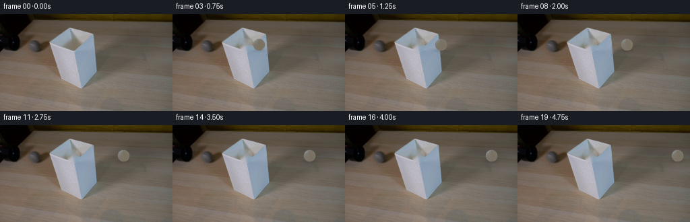
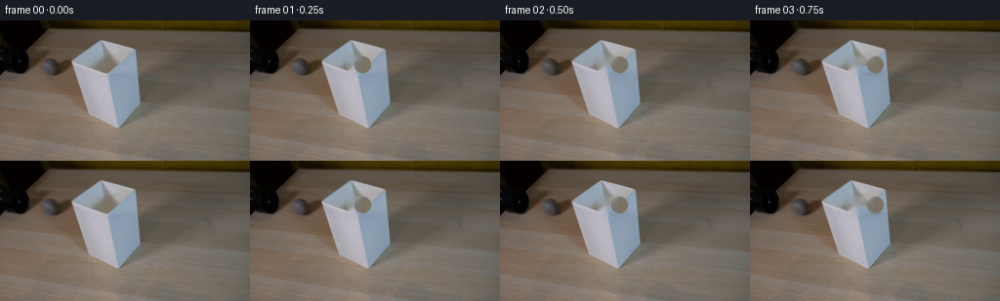
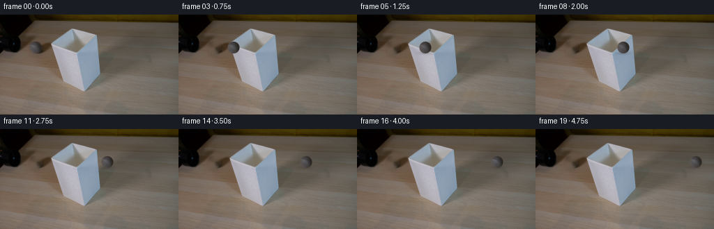
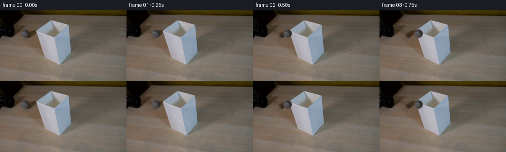

CODING AGENTS AS PIXEL WORLD MODELS
traex/DeepSeek-V4.1-Flash · 0147
点击播放 · 原生 RGB 像素
逐轮保存的候选
回放视频、检查图与代码变化。
每份候选均可单独播放。实际图片检查记录在下方工具轨迹中。
候选 01播放与检查图
点击播放 · 原生 RGB 像素


展开代码变化
--- 上一保存版本
+++ 本次保存版本
@@ -0,0 +1,111 @@
+from pathlib import Path
+
+import cv2
+import numpy as np
+from PIL import Image
+
+import artifact_io
+
+
+WIDTH = 256
+HEIGHT = 144
+FRAMES = 20
+FPS = 4
+
+
+def _ball_asset(frame):
+ """Extract the ball while replacing its antialiased edge with clean shading."""
+ cy, cx = 45.0, 108.0
+ radius = 8.6
+ yy, xx = np.mgrid[:HEIGHT, :WIDTH]
+ dist = np.hypot(xx - cx, yy - cy)
+ angle = np.arctan2(yy - cy, xx - cx)
+
+ colors = frame.astype(np.float32)
+ texture = np.empty_like(colors)
+ alpha = np.clip(radius + 0.65 - dist, 0.0, 1.0)
+
+ # Keep the photographed interior and synthesize only the narrow rim from
+ # adjacent interior pixels. This avoids a pale fringe when the ball moves.
+ for y in range(int(cy - radius) - 2, int(cy + radius) + 3):
+ for x in range(int(cx - radius) - 2, int(cx + radius) + 3):
+ d = dist[y, x]
+ if d <= 7.15:
+ texture[y, x] = colors[y, x]
+ elif d <= radius + 1.5:
+ theta = angle[y, x]
+ sx = int(round(cx + 6.9 * np.cos(theta)))
+ sy = int(round(cy + 6.9 * np.sin(theta)))
+ rim = colors[sy, sx]
+ edge_mix = np.clip((d - 7.15) / (radius + 0.65 - 7.15), 0.0, 1.0)
+ texture[y, x] = colors[y, x] * (1.0 - edge_mix) + rim * edge_mix
+
+ return texture, alpha
+
+
+def _clean_plate(frame):
+ """Remove the source ball so the plate can be reused behind its motion."""
+ cy, cx = 45, 108
+ yy, xx = np.mgrid[:HEIGHT, :WIDTH]
+ mask = ((xx - cx) ** 2 + (yy - cy) ** 2 <= 10.2**2).astype(np.uint8) * 255
+ bgr = cv2.cvtColor(frame, cv2.COLOR_RGB2BGR)
+ clean = cv2.inpaint(bgr, mask, 5.0, cv2.INPAINT_TELEA)
+ return cv2.cvtColor(clean, cv2.COLOR_BGR2RGB)
+
+
+def _composite(plate, ball, alpha, cx, cy):
+ out = plate.astype(np.float32).copy()
+ src_x = int(round(cx - 108))
+ src_y = int(round(cy - 45))
+
+ # A soft contact shadow travels with the ball once it is over the tabletop.
+ yy, xx = np.mgrid[:HEIGHT, :WIDTH]
+ shadow = np.exp(
+ -0.5
+ * (
+ ((xx - (cx - 0.7)) / 7.2) ** 2
+ + ((yy - 53.2) / 2.0) ** 2
+ )
+ )
+ shadow *= 0.14 * np.clip((cx - 112.0) / 22.0, 0.0, 1.0)
+ out *= (1.0 - shadow[:, :, None]).astype(np.float32)
+
+ x0 = max(0, src_x)
+ y0 = max(0, src_y)
+ x1 = min(WIDTH, src_x + WIDTH)
+ y1 = min(HEIGHT, src_y + HEIGHT)
+ sx0, sy0 = x0 - src_x, y0 - src_y
+ sx1, sy1 = sx0 + (x1 - x0), sy0 + (y1 - y0)
+ if x1 <= x0 or y1 <= y0:
+ return np.clip(out, 0, 255).astype(np.uint8)
+
+ a = alpha[sy0:sy1, sx0:sx1, None]
+ rgb = ball[sy0:sy1, sx0:sx1]
+ out[y0:y1, x0:x1] = out[y0:y1, x0:x1] * (1.0 - a) + rgb * a
+ return np.clip(out, 0, 255).astype(np.uint8)
+
+
+def main():
+ case_dir = Path(__file__).resolve().parent
+ first = np.asarray(Image.open(case_dir / "first_frame.png").convert("RGB"))
+ if first.shape != (HEIGHT, WIDTH, 3):
+ raise ValueError(f"unexpected first frame shape: {first.shape}")
+
+ ball, alpha = _ball_asset(first)
+ plate = _clean_plate(first)
+ frames = np.empty((FRAMES, HEIGHT, WIDTH, 3), dtype=np.uint8)
+ frames[0] = first
+
+ # The ball leaves the tube already rolling and crosses the table at a
+ # constant real-time speed.
+ start_x = 108.0
+ speed = 6.8 # pixels per 1/4-second frame
+ for index in range(1, FRAMES):
+ cx = start_x + speed * index
+ frames[index] = _composite(plate, ball, alpha, cx, 45.0)
+
+ artifact_io.save(frames, case_dir)
+
+
+if __name__ == "__main__":
+ main()
候选 02播放与检查图
点击播放 · 原生 RGB 像素


展开代码变化
--- 上一保存版本
+++ 本次保存版本
@@ -15,8 +15,8 @@
def _ball_asset(frame):
"""Extract the ball while replacing its antialiased edge with clean shading."""
- cy, cx = 45.0, 108.0
- radius = 8.6
+ cy, cx = 47.0, 50.5
+ radius = 8.4
yy, xx = np.mgrid[:HEIGHT, :WIDTH]
dist = np.hypot(xx - cx, yy - cy)
angle = np.arctan2(yy - cy, xx - cx)
@@ -30,44 +30,44 @@
for y in range(int(cy - radius) - 2, int(cy + radius) + 3):
for x in range(int(cx - radius) - 2, int(cx + radius) + 3):
d = dist[y, x]
- if d <= 7.15:
+ if d <= 6.9:
texture[y, x] = colors[y, x]
elif d <= radius + 1.5:
theta = angle[y, x]
- sx = int(round(cx + 6.9 * np.cos(theta)))
- sy = int(round(cy + 6.9 * np.sin(theta)))
+ sx = int(round(cx + 6.6 * np.cos(theta)))
+ sy = int(round(cy + 6.6 * np.sin(theta)))
rim = colors[sy, sx]
- edge_mix = np.clip((d - 7.15) / (radius + 0.65 - 7.15), 0.0, 1.0)
+ edge_mix = np.clip((d - 6.9) / (radius + 0.65 - 6.9), 0.0, 1.0)
texture[y, x] = colors[y, x] * (1.0 - edge_mix) + rim * edge_mix
return texture, alpha
def _clean_plate(frame):
- """Remove the source ball so the plate can be reused behind its motion."""
- cy, cx = 45, 108
+ """Remove the source ball and reconstruct its local scene gradients."""
+ cy, cx = 47, 51
yy, xx = np.mgrid[:HEIGHT, :WIDTH]
- mask = ((xx - cx) ** 2 + (yy - cy) ** 2 <= 10.2**2).astype(np.uint8) * 255
+ mask = ((xx - cx) ** 2 + (yy - cy) ** 2 <= 9.6**2).astype(np.uint8) * 255
bgr = cv2.cvtColor(frame, cv2.COLOR_RGB2BGR)
- clean = cv2.inpaint(bgr, mask, 5.0, cv2.INPAINT_TELEA)
+ clean = cv2.inpaint(bgr, mask, 4.0, cv2.INPAINT_TELEA)
return cv2.cvtColor(clean, cv2.COLOR_BGR2RGB)
def _composite(plate, ball, alpha, cx, cy):
out = plate.astype(np.float32).copy()
- src_x = int(round(cx - 108))
- src_y = int(round(cy - 45))
+ src_x = int(round(cx - 50.5))
+ src_y = int(round(cy - 47.0))
# A soft contact shadow travels with the ball once it is over the tabletop.
yy, xx = np.mgrid[:HEIGHT, :WIDTH]
shadow = np.exp(
-0.5
* (
- ((xx - (cx - 0.7)) / 7.2) ** 2
- + ((yy - 53.2) / 2.0) ** 2
+ ((xx - (cx - 0.7)) / 7.0) ** 2
+ + ((yy - 55.0) / 1.7) ** 2
)
)
- shadow *= 0.14 * np.clip((cx - 112.0) / 22.0, 0.0, 1.0)
+ shadow *= 0.13 * np.clip((cx - 75.0) / 20.0, 0.0, 1.0)
out *= (1.0 - shadow[:, :, None]).astype(np.float32)
x0 = max(0, src_x)
@@ -98,11 +98,11 @@
# The ball leaves the tube already rolling and crosses the table at a
# constant real-time speed.
- start_x = 108.0
- speed = 6.8 # pixels per 1/4-second frame
+ start_x = 50.5
+ speed = 9.4 # pixels per 1/4-second frame
for index in range(1, FRAMES):
cx = start_x + speed * index
- frames[index] = _composite(plate, ball, alpha, cx, 45.0)
+ frames[index] = _composite(plate, ball, alpha, cx, 47.0)
artifact_io.save(frames, case_dir)
可观测工具轨迹
实际执行的命令与返回图片。
命令 1exit 0
/bin/bash -c "pwd && rg --files -g 'prompt.txt' -g 'GENERATION_RULES.md' -g 'first_frame.png' -g '"'!**/.git/**'"'"
命令 2exit 0
/bin/bash -c 'git status --short && ls -la'
命令 3exit 0
/bin/bash -c 'cat prompt.txt'
命令 4exit 0
/bin/bash -c 'cat GENERATION_RULES.md'
命令 5exit 0
/bin/bash -c "sed -n '1,240p' artifact_io.py && printf '\\n--- PLAYER ---\\n' && sed -n '1,240p' player_template.html"
命令 6exit 127
/bin/bash -c "file first_frame.png && python3 - <<'PY'
from PIL import Image
im=Image.open('first_frame.png')
print(im.mode, im.size)
PY"命令 7exit 0
/bin/bash -c "python3 - <<'PY'
from PIL import Image
import numpy as np
im=np.array(Image.open('first_frame.png').convert('RGB'))
print('shape',im.shape,'dtype',im.dtype)
print('min/max/mean',im.min((0,1)),im.max((0,1)),im.mean((0,1)))
# dominant quantized colors
q=(im//16)*16+8
u,c=np.unique(q.reshape(-1,3),axis=0,return_counts=True)
for i in np.argsort(c)[-20:][::-1]: print(tuple(u[i]), int(c[i]), round(100*c[i]/(256*144),2))
PY"命令 8exit 0
/bin/bash -c "python3 - <<'PY'
from PIL import Image,ImageDraw,ImageFont
im=Image.open('first_frame.png').convert('RGB')
# upscale 4x nearest with grid coordinates every 16px, labels
s=4
up=im.resize((256*s,144*s),Image.Resampling.NEAREST)
d=ImageDraw.Draw(up)
for x in range(0,257,16):
X=x*s; d.line((X,0,X,144*s),fill=(255,0,255),width=1); d.text((X+2,2),str(x),fill=(255,255,0))
for y in range(0,145,16):
Y=y*s; d.line((0,Y,256*s,Y),fill=(255,0,255),width=1); d.text((2,Y+2),str(y),fill=(255,255,0))
up.save('.tmp/grid.png')
# crops upscaled
for name,box in {'left':(0,20,140,144),'right':(100,20,256,144),'center':(40,40,220,130)}.items():
im.crop(box).resize(((box[2]-box[0])*6,(box[3]-box[1])*6),Image.Resampling.NEAREST).save(f'.tmp/{name}.png')
PY"命令 9exit 0
/bin/bash -c "python3 - <<'PY'
from PIL import Image
import numpy as np
im=np.array(Image.open('first_frame.png').convert('RGB')).astype(float)
# print row/column stats and coarse color ASCII luminance to understand layout
g=im.mean(2)
chars=' .:-=+*#%@'
for y in range(0,144,4):
print(f'{y:03d} '+''.join(chars[min(9,int(g[y:y+4,x:x+4].mean()/256*10))] for x in range(0,256,4)))
PY"命令 10exit 0
/bin/bash -c "python3 - <<'PY'
try:
import cv2; print('cv2',cv2.__version__)
except Exception as e: print('no cv2',e)
try:
import scipy; print('scipy',scipy.__version__)
except Exception as e: print('no scipy',e)
PY"命令 11exit 0
/bin/bash -c "python3 - <<'PY'
from PIL import Image
import numpy as np
im=np.array(Image.open('first_frame.png').convert('RGB'))
# coordinate extents for classes
g=im.mean(2); mx=im.max(2); mn=im.min(2); sat=mx-mn
classes={
'dark<35':mx<35,
'verydark<60':mx<60,
'bright>150':mn>150,
'bluegrey':(im[:,:,2]>im[:,:,0]+10)&(mx>80),
'warm':(im[:,:,0]>im[:,:,2]+20)&(mx>70),
'green?':(im[:,:,1]>im[:,:,0]+8)&(im[:,:,1]>im[:,:,2]+8),
}
for n,m in classes.items():
ys,xs=np.where(m)
print(n,'n',len(xs),'x', (xs.min(),xs.max()) if len(xs) else None,'y',(ys.min(),ys.max()) if len(xs) else None,'mean',im[m].mean(0) if len(xs) else None)
# sample every 16x16 center color
for y in range(8,144,16):
print('y',y, [tuple(im[y,x]) for x in range(8,256,16)])
PY"命令 12exit 0
/bin/bash -c "python3 - <<'PY'
from PIL import Image
import numpy as np
im=np.array(Image.open('first_frame.png').convert('RGB')).astype(float)
# 2x2 mean map, 128x72
im=im[:144,:256].reshape(72,2,128,2,3).mean((1,3))
for y,row in enumerate(im):
s=''
for r,g,b in row:
mx=max(r,g,b); mn=min(r,g,b); lum=.3*r+.59*g+.11*b
if mx<20: c=' '
elif mx<45: c='.'
elif b>r+9 and b>g-2 and lum>75: c='B' # cool shade
elif lum>165 and mx-mn<30: c='W'
elif lum<65: c=','
elif r>b+12: c='t' if lum>105 else 'T'
elif lum<90: c='-'
else: c='='
s+=c
print(f'{y*2:03d} {s}')
PY"命令 13exit 0
/bin/bash -c "python3 - <<'PY'
from PIL import Image
import numpy as np
im=np.array(Image.open('first_frame.png').convert('RGB'))
# crop central structure and save ascii at full res with thresholds, 2x downsampling
for y in range(16,116,2):
s=''
for x in range(40,160,2):
r,g,b=im[y:y+2,x:x+2].mean((0,1)); mx=max(r,g,b); mn=min(r,g,b); lum=.3*r+.59*g+.11*b
if b>r+15 and b>g+4 and lum>80: c='#' # cool blue
elif b>r+8 and lum>65: c='b'
elif lum>155 and mx-mn<35: c='W'
elif lum<50: c=' '
elif r>b+12: c='.'
else: c='-'
s+=c
print(f'{y:03d} {s}')
PY"命令 14exit 0
/bin/bash -c "python3 - <<'PY'
from PIL import Image
import numpy as np
im=np.array(Image.open('first_frame.png').convert('RGB'))
# likely lamp shade: pixels with blue channel significantly above r (exclude table)
m=(im[:,:,2].astype(int)>im[:,:,0].astype(int)+10)&(im[:,:,2].astype(int)>im[:,:,1].astype(int)+0)&(im.mean(2)>65)
ys,xs=np.where(m)
print('mask',len(xs),'bounds',xs.min(),xs.max(),ys.min(),ys.max())
# connected comps cv2
import cv2
num,lab,stats,cents=cv2.connectedComponentsWithStats(m.astype('uint8'),8)
for i in sorted(range(1,num), key=lambda i:stats[i,4], reverse=True)[:20]: print(i,stats[i].tolist(),cents[i].tolist())
# black mask
m2=im.max(2)<55
num,lab,stats,cents=cv2.connectedComponentsWithStats(m2.astype('uint8'),8)
print('dark comps')
for i in sorted(range(1,num), key=lambda i:stats[i,4], reverse=True)[:20]: print(i,stats[i].tolist(),cents[i].tolist())
PY"命令 15exit 0
/bin/bash -c "python3 - <<'PY'
from PIL import Image
import numpy as np, cv2
im=np.array(Image.open('first_frame.png').convert('RGB'))
# edges using gradients to locate tube/ball boundaries
for boxname,(x0,y0,x1,y1) in {'tube':(0,30,160,115),'ball':(35,35,85,75),'lamp':(70,15,155,115)}.items():
crop=im[y0:y1,x0:x1]
print('\\n',boxname)
# print each row's local colors at certain columns, only ball area
if boxname=='ball':
for y in range(y0,y1,2):
vals=[]
for x in range(x0,x1,2):
r,g,b=im[y,x]
vals.append('B' if int(b)>int(r)+15 and int(b)>int(g)+5 else ('W' if min(r,g,b)>140 else ('D' if max(r,g,b)<50 else '.')))
print(f'{y:03d}', ''.join(vals))
PY"命令 16exit 0
/bin/bash -c "python3 - <<'PY'
from PIL import Image
import numpy as np
im=np.array(Image.open('first_frame.png').convert('RGB'))
# ASCII for dark tube area with thresholds
for y in range(32,112,2):
s=''
for x in range(0,160,2):
r,g,b=im[y:y+2,x:x+2].mean((0,1)); lum=.3*r+.59*g+.11*b; mx=max(r,g,b)
if mx<25: c='#'
elif mx<45: c='@'
elif mx<65: c='+'
elif b>r+15 and lum>85: c='B'
elif min(r,g,b)>135: c='W'
elif lum>105: c='t'
elif lum>75: c='.'
else: c=' '
s+=c
print(f'{y:03d} {s}')
PY"命令 17exit 0
/bin/bash -c "python3 - <<'PY'
from PIL import Image
im=Image.open('first_frame.png')
print(im.getbbox())
# list avg row for boundary x
import numpy as np
a=np.array(im)
for y in range(40,112,4):
# print darkest run and bright regions
row=a[y]
print(y, 'dark x', np.where(row.max(1)<50)[0][:10].tolist(), np.where(row.max(1)<50)[0][-10:].tolist(), 'x80',row[80].tolist(),'x100',row[100].tolist(),'x130',row[130].tolist())
PY"命令 18exit 0
/bin/bash -c "python3 - <<'PY'
from PIL import Image
import numpy as np
from sklearn.cluster import KMeans
im=np.array(Image.open('first_frame.png').convert('RGB'))
X=im.reshape(-1,3)[::4]
km=KMeans(8,random_state=0,n_init=10).fit(X)
print(km.cluster_centers_.round(1))
labs=km.predict(im.reshape(-1,3)).reshape(144,256)
for i,c in enumerate(km.cluster_centers_):
ys,xs=np.where(labs==i)
print(i,c.round(1),len(xs),'bbox',xs.min(),ys.min(),xs.max(),ys.max())
# map clusters to chars by luminance
lum=km.cluster_centers_@np.array([.299,.587,.114])
chars=' .:-=+*#%@'
for y in range(0,144,3):
print(''.join(chars[min(9,int(lum[labs[y,x]]/256*10))] for x in range(0,256,3)))
PY"命令 19exit 0
/bin/bash -c "python3 - <<'PY'
from PIL import Image
import numpy as np
im=np.array(Image.open('first_frame.png').convert('RGB')).astype(float)
# print detailed numeric color patches on a grid around tube and ball
for y in [42,44,46,48,50,52,54,56,58,60,62,64,66,68,70,72,74,76,80,84,88,92,96,100,104,108,112,116,120,124,128,132,136,140]:
print('y',y, ' '.join(f'{x}:{tuple(im[y,x].astype(int))}' for x in [30,35,40,45,50,55,60,65,70,75,80,85,90,95,100,105,110,115,120,125,130,135,140,145,150]))
PY"命令 20exit 0
/bin/bash -c "python3 - <<'PY'
from PIL import Image
import numpy as np
im=np.array(Image.open('first_frame.png').convert('RGB'))
# classify pixels likely tube: dark region around x 0-65, y 30-56; print mask rows
for y in range(28,60):
s=''
for x in range(0,90):
r,g,b=im[y,x]
if max(r,g,b)<30: c='#'
elif max(r,g,b)<50: c='@'
elif max(r,g,b)<70: c='+'
elif max(r,g,b)<90: c='.'
else: c=' '
s+=c
print(f'{y:03d} {s}')
PY"命令 21exit 0
/bin/bash -c "python3 - <<'PY'
from PIL import Image
import numpy as np, cv2
im=np.array(Image.open('first_frame.png').convert('RGB'))
g=cv2.cvtColor(im,cv2.COLOR_RGB2GRAY)
for t in [20,30,40,50,60,70,80,90]:
m=(g<t).astype(np.uint8)
n,l,st,c=cv2.connectedComponentsWithStats(m,8)
comps=sorted(range(1,n),key=lambda i:st[i,4],reverse=True)
print('\\nt',t,[st[i].tolist() for i in comps[:5]])
# exact gradients in 30-70 x 30-70, print edges magnitude ascii
e=cv2.Canny(im,30,80)
for y in range(20,70,2):
print(''.join('#' if e[y,x] else ' ' for x in range(20,90,2)))
PY"命令 22exit 0
/bin/bash -c "python3 - <<'PY'
import cv2, numpy as np
from PIL import Image
im=np.array(Image.open('first_frame.png').convert('RGB'))
g=cv2.cvtColor(im,cv2.COLOR_RGB2GRAY)
for p1,p2 in [(50,100),(30,80),(100,200),(20,60)]:
c=cv2.HoughCircles(g,cv2.HOUGH_GRADIENT,dp=1,minDist=10,param1=p1,param2=p2,minRadius=3,maxRadius=50)
print(p1,p2, None if c is None else np.round(c[0],1).tolist())
PY"命令 23exit 0
/bin/bash -c "python3 - <<'PY'
from PIL import Image
im=Image.open('first_frame.png')
# ascii in grayscale around center (70..115, 40..80) full
import numpy as np
a=np.array(im).astype(float)
g=a.mean(2)
chars=' .:-=+*#%@'
for y in range(36,72):
print(f'{y:03d} '+''.join(chars[min(9,int(g[y,x]/256*10))] for x in range(68,122)))
PY"命令 24exit 0
/bin/bash -c "python3 - <<'PY'
from PIL import Image
import numpy as np
im=np.array(Image.open('first_frame.png').convert('RGB')).astype(float)
# top surface gradient map: HSV saturation
import cv2
hsv=cv2.cvtColor(im.astype('uint8'),cv2.COLOR_RGB2HSV)
# dark y<=55 outside lamp bbox; show locations of warm wood background color maybe
for y in range(0,60,2):
s=''
for x in range(0,256,2):
r,g,b=im[y:y+2,x:x+2].mean((0,1)); lum=.3*r+.59*g+.11*b
if lum<12: c=' '
elif lum<25: c='.'
elif lum<40: c=':'
elif lum<60: c='-'
elif lum<80: c='='
elif lum<105: c='+'
elif lum<135: c='*'
elif lum<165: c='#'
else: c='@'
s+=c
print(f'{y:03d} {s}')
PY"命令 25exit 0
/bin/bash -c "python3 - <<'PY'
from PIL import Image
import numpy as np
im=np.array(Image.open('first_frame.png').convert('RGB'))
# sample central ball object, exact colors and boundary using likely circle around (108,66) r=30
for y in range(38,98,4):
print(y, [(x,tuple(im[y,x])) for x in range(80,141,4)])
PY"命令 26exit 0
/bin/bash -c "python3 - <<'PY'
from PIL import Image
import numpy as np
im=np.array(Image.open('first_frame.png').convert('RGB')).astype(int)
# print compact RGB classes in ball crop x45:75 y35:65
for y in range(34,66):
vals=[]
for x in range(44,78):
r,g,b=im[y,x]
if max(r,g,b)<25: c='#'
elif max(r,g,b)<45: c='@'
elif max(r,g,b)<65: c='+'
elif b>r+15 and b>g+5: c='B'
elif b>r+8: c='b'
elif min(r,g,b)>130: c='W'
elif abs(r-g)<8 and abs(g-b)<8: c='G'
elif r>b+10: c='t'
else: c='.'
vals.append(c)
print(f'{y:03d} '+''.join(vals))
print('\\nvalues center region')
for y in range(38,58,2):
print(y, [tuple(im[y,x]) for x in range(48,72,2)])
PY"命令 27exit 0
/bin/bash -c "python3 - <<'PY'
from PIL import Image
import numpy as np
im=np.array(Image.open('first_frame.png').convert('RGB')).astype(float)
# Check low-saturation grey regions for round ball candidates. connected comp of grey where chroma<18 and lum 40-160
lum=im.mean(2); chroma=im.max(2)-im.min(2)
for y in range(20,80,2):
s=''
for x in range(20,160,2):
r,g,b=im[y:y+2,x:x+2].mean((0,1)); l=(r+g+b)/3; c=max(r,g,b)-min(r,g,b)
if c<10 and 35<l<150: c='G'
elif c<20 and 35<l<150: c='g'
elif c<25 and 35<l<150: c=':'
elif l<30: c=' '
else: c='.'
s+=c
print(f'{y:03d} {s}')
PY"命令 28exit 0
/bin/bash -c "python3 - <<'PY'
from PIL import Image
import numpy as np, cv2
im=np.array(Image.open('first_frame.png').convert('RGB')).astype(float)
lum=im.mean(2); chroma=im.max(2)-im.min(2)
# find pixels matching grey ball candidate colors around x55,y48
for x,y in [(54,46),(56,48),(60,48),(53,48),(57,48),(56,50),(58,46),(60,45),(62,45),(50,46),(60,52)]: print((x,y),im[y,x].round().astype(int))
# local crop exact luma map, x45:72 y37:60
chars=' .:-=+*#%@'
for y in range(35,61):
print(f'{y:03d} '+''.join(chars[min(9,int(lum[y,x]/256*10))] for x in range(42,80)))
PY"命令 29exit 0
/bin/bash -c "python3 - <<'PY'
from PIL import Image
import numpy as np
im=np.array(Image.open('first_frame.png').convert('RGB')).astype(float)
# print image extrema in central ball crop and grayscale difference edges. Ball maybe from x45 to 66, y39-56.
# fit circle to dark-grey center pixels: low chroma, mid gray, x45-70,y38-60
m=np.zeros(im.shape[:2],bool); m[38:60,45:72]=True
lum=im.mean(2); ch=im.max(2)-im.min(2)
m &= (ch<15)&(lum>25)&(lum<110)
ys,xs=np.where(m)
print('n',len(xs),'bbox',xs.min(),xs.max(),ys.min(),ys.max(),'mean',im[m].mean(0))
print(list(zip(xs.tolist(),ys.tolist()))[:100])
PY"命令 30exit 0
/bin/bash -c "python3 - <<'PY'
from PIL import Image
import numpy as np
im=np.array(Image.open('first_frame.png').convert('RGB')).astype(float)
# examine edge and brightness around ball at x 45..65 y 38..58 via rgb residual from smooth background? print chroma / brightness map
lum=im.mean(2); ch=im.max(2)-im.min(2)
for y in range(35,61):
s=''
for x in range(35,75):
r,g,b=im[y,x]; l=(r+g+b)/3; c=max(r,g,b)-min(r,g,b)
if l<30:c=' '
elif c<7 and l>48:c='G'
elif c<12 and l>42:c='g'
elif c<18:c=':'
elif b>r+8:c='B'
elif r>b+8:c='t'
else:c='.'
s+=c
print(f'{y:03d} {s}')
PY"命令 31exit 0
/bin/bash -c "python3 - <<'PY'
from PIL import Image
import numpy as np
im=np.array(Image.open('first_frame.png').convert('RGB')).astype(float)
# visual ball estimate by fitting circle mask manually to x45..59 y39..55, center 52,47 r 8
# compare true ball pixels to circular patch stats and print gradients
cx,cy=52,47;r=9
yy,xx=np.ogrid[:144,:256]
m=(xx-cx)**2+(yy-cy)**2<=r*r
print('circle mean',im[m].mean(0),'std',im[m].std(0))
# connected component low chroma mask details
lum=im.mean(2);ch=im.max(2)-im.min(2); m=(ch<15)&(lum>25)&(lum<110)
import cv2
n,l,st,c=cv2.connectedComponentsWithStats(m.astype('uint8'),8)
for i in sorted(range(1,n),key=lambda i:st[i,4],reverse=True)[:10]:
if st[i,4]>10: print(i,st[i].tolist(),c[i].tolist())
# average image patch relative to ball for radius 10
patch=im[37:58,42:63]
print('patch size')
PY"命令 32exit 0
/bin/bash -c "python3 - <<'PY'
from PIL import Image
import numpy as np
im=np.array(Image.open('first_frame.png').convert('RGB')).astype(float)
# sample broad x/y mean to find table front surface edges. report local discontinuity candidates from row diffs.
d=np.abs(np.diff(im,axis=0)).mean(2)
print('row diff top',[(int(y),round(float(d[y].mean()),2)) for y in np.argsort(d.mean(1))[-20:][::-1]])
d2=np.abs(np.diff(im,axis=1)).mean(2)
print('col diff top',[(int(x),round(float(d2[:,x].mean()),2)) for x in np.argsort(d2.mean(0))[-20:][::-1]])
PY"命令 33exit 0
/bin/bash -c "python3 - <<'PY'
from PIL import Image
import numpy as np
im=np.array(Image.open('first_frame.png').convert('RGB')).astype(float)
# inspect where tube mouth ends: crop x 30-75 y 35-60, print saturated neutral mask and values
for y in range(36,60):
s=''
for x in range(20,90):
r,g,b=im[y,x]; l=(r+g+b)/3; c=max(r,g,b)-min(r,g,b)
if l<22:c='#'
elif l<35:c='@'
elif l<50:c='+'
elif l<65:c='.'
elif c<15 and l<110:c='G'
elif l<90:c=','
elif b>r+10:c='B'
else:c=' '
s+=c
print(f'{y:03d} {s}')
PY"命令 34exit 0
/bin/bash -c "python3 - <<'PY'
from PIL import Image
import numpy as np
im=np.array(Image.open('first_frame.png').convert('RGB')).astype(float)
# Scan for round-ish connected regions in Canny in left half
import cv2
g=cv2.cvtColor(im.astype('uint8'),cv2.COLOR_RGB2GRAY)
e=cv2.Canny(g,20,60)
contours,_=cv2.findContours(e,cv2.RETR_LIST,cv2.CHAIN_APPROX_SIMPLE)
arr=[]
for c in contours:
x,y,w,h=cv2.boundingRect(c); area=cv2.contourArea(c); peri=cv2.arcLength(c,True)
if area>10 and 4<w<40 and 4<h<40 and .6<w/h<1.6:
arr.append((round(area,1),x,y,w,h,round(area/(w*h),2)))
print(sorted(arr,reverse=True)[:50])
PY"命令 35exit 0
/bin/bash -c "python3 - <<'PY'
from PIL import Image
import numpy as np
im=np.array(Image.open('first_frame.png').convert('RGB')).astype(float)
# The tube opening seems around x=60-75? inspect row RGB differences x0-150 at y45-58, report strong x gradients
for y in [45,48,50,52,54,56,58,60]:
g=np.abs(np.diff(im[y,:,:],axis=0)).mean(1)
print('y',y,'top',[(int(x),round(float(g[x]),1)) for x in np.argsort(g[:150])[-15:][::-1]])
PY"命令 36exit 0
/bin/bash -c "python3 - <<'PY'
from PIL import Image
import numpy as np
im=np.array(Image.open('first_frame.png').convert('RGB')).astype(float)
# print detailed crops in simple hex-ish RGB to see boundaries
for y in range(36,58):
print('y',y, ' '.join(f'{x}:{int(im[y,x,0]):02x}{int(im[y,x,1]):02x}{int(im[y,x,2]):02x}' for x in range(42,80)))
PY"命令 37exit 1
/bin/bash -c "python3 - <<'PY'
from PIL import Image
import numpy as np
im=np.array(Image.open('first_frame.png').convert('RGB')).astype(float)
# Analyze frame around ball using Laplacian / local contrast to identify silhouette mask.
import cv2
# likely object bbox 43:61 38:57. Fit circle from chroma mask manually with range
for cx in range(49,56):
for cy in range(45,50):
for r in range(7,11):
yy,xx=np.ogrid[:144,:256]; m=(xx-cx)**2+(yy-cy)**2<=r*r
# compare mean chroma within vs annulus
ch=im.max(2)-im.min(2)
score=ch[m].mean()-ch[(xx-cx)**2+(yy-cy)**2<= (r+3)**2][~m].mean()
if score>7: print(cx,cy,r,round(score,2),round(ch[m].mean(),2),round(ch[(xx-cx)**2+(yy-cy)**2<=(r+3)**2][~m].mean(),2))
PY"命令 38exit 0
/bin/bash -c "python3 - <<'PY'
from PIL import Image
import numpy as np
im=np.array(Image.open('first_frame.png').convert('RGB')).astype(float)
ch=im.max(2)-im.min(2)
yy,xx=np.ogrid[:144,:256]
best=[]
for cx in range(47,59):
for cy in range(43,53):
for r in range(5,13):
m=(xx-cx)**2+(yy-cy)**2<=r*r
ann=((xx-cx)**2+(yy-cy)**2<=(r+3)**2)&~m
score=ch[m].mean()-ch[ann].mean()
best.append((score,cx,cy,r,ch[m].mean(),ch[ann].mean()))
for row in sorted(best,reverse=True)[:20]: print(tuple(round(float(v),2) for v in row))
PY"命令 39exit 0
/bin/bash -c "python3 - <<'PY'
from PIL import Image
import numpy as np
im=np.array(Image.open('first_frame.png').convert('RGB')).astype(float)
# Examine edge of tube mouth at x 60-80 and silhouette of ball around x52 y47. Print masked pixel visualization by distance to background model?
# Ball candidate likely x44..60 y39..56. dump as 16-level chars separately R,G,B
for ch,name in [(0,'R'),(1,'G'),(2,'B')]:
print(name)
for y in range(37,58):
s=''
for x in range(40,64):
v=im[y,x,ch]
s+= ' .:-=+*#%@'[min(9,int(v/195*10))]
print(f'{y:03d} {s}')
PY"命令 40exit 0
/bin/bash -c "python3 - <<'PY'
from PIL import Image
import numpy as np
im=np.array(Image.open('first_frame.png').convert('RGB')).astype(float)
# inspect dark grey ball region vs nearby background, print RGB with labels. identify edge via local chroma/luma
for y in range(37,58):
vals=[]
for x in range(40,65):
r,g,b=im[y,x]
if b-r>10 and r>80: c='B'
elif max(r,g,b)-min(r,g,b)<15 and (r+g+b)/3>35: c='G'
elif (r+g+b)/3<38: c='#'
else:c='.'
vals.append(c)
print(f'{y:03d} '+''.join(vals))
PY"命令 41exit 0
/bin/bash -c "python3 - <<'PY'
from PIL import Image
import numpy as np
im=np.array(Image.open('first_frame.png').convert('RGB')).astype(float)
# detect tube mouth: rows 44..56, x 60..90 gradient high boundary x 75. Crop save nearest for mental layout
Image.open('first_frame.png').crop((0,24,100,70)).resize((1000,460),Image.Resampling.NEAREST).save('.tmp/mouth.png')
Image.open('first_frame.png').crop((38,34,68,60)).resize((600,520),Image.Resampling.NEAREST).save('.tmp/ball.png')
PY"命令 42exit 0
/bin/bash -c "python3 - <<'PY'
from PIL import Image
import numpy as np
im=np.array(Image.open('first_frame.png').convert('RGB')).astype(float)
# R/G/B ratio on ball: neutral pixels, candidate bbox exact. inspect edges and estimate circle boundary based on chroma threshold within bbox
for y in range(38,57):
arr=[]
for x in range(40,65):
r,g,b=im[y,x]; c=max(r,g,b)-min(r,g,b); l=(r+g+b)/3
if c<17 and l>35: arr.append(x)
print(y, (min(arr),max(arr),len(arr)) if arr else None)
PY"命令 43exit 0
/bin/bash -c "python3 - <<'PY'
from PIL import Image
import numpy as np
im=np.array(Image.open('first_frame.png').convert('RGB')).astype(float)
# Ball exact mask from neutral criterion within crop, fit circle parameters to edge points using least squares
pts=[]
for y in range(39,56):
for x in range(40,65):
r,g,b=im[y,x]; c=max(r,g,b)-min(r,g,b); l=(r+g+b)/3
if c<17 and l>35: pts.append((x,y))
P=np.array(pts); print(P.mean(0),P.min(0),P.max(0))
# boundary mask display
for y in range(37,58):
print(f'{y:03d} '+''.join('O' if (x,y) in set(map(tuple,P)) else ' ' for x in range(38,66)))
PY"命令 44exit 0
/bin/bash -c "python3 - <<'PY'
from PIL import Image
import numpy as np
im=np.array(Image.open('first_frame.png').convert('RGB')).astype(float)
# Determine neutral ball mask boundaries vs table: ball center x50.6 y47.1, radii ~8.5.
# look for tube exit coordinate from edge around x75. sample right of x75 for table top.
for y in range(38,58):
print(y, [tuple(im[y,x].astype(int)) for x in range(72,83)])
PY"命令 45exit 0
/bin/bash -c "python3 - <<'PY'
from PIL import Image
import numpy as np
im=np.array(Image.open('first_frame.png').convert('RGB')).astype(float)
# Detect tube mouth ellipse and table plane. visual coarse chars x0-100 y0-70
lum=im.mean(2)
chars=' .:-=+*#%@'
for y in range(0,72,2):
print(f'{y:03d} '+''.join(chars[min(9,int(lum[y,x]/256*10))] for x in range(0,100,1)))
PY"命令 46exit 0
/bin/bash -c "python3 - <<'PY'
from PIL import Image
import numpy as np
im=np.array(Image.open('first_frame.png').convert('RGB')).astype(float)
# Identify tube mouth by finding sharp edge x around 74-80 for each y. Print row values x 55-85 only concise luminance
for y in range(30,60):
lum=im[y].mean(1)
print(f'{y:03d}', ' '.join(f'{x}:{lum[x]:.0f}' for x in range(50,90)))
PY"命令 47exit 0
/bin/bash -c "python3 - <<'PY'
from PIL import Image
import numpy as np
im=np.array(Image.open('first_frame.png').convert('RGB')).astype(float)
# Inspect x70-150,y20-115 smooth white lampshade region. Quantize color and see central symmetry. Print char for very neutral / bright
for y in range(20,114,2):
s=''
for x in range(68,150):
r,g,b=im[y,x]; mx=max(r,g,b);mn=min(r,g,b);l=(r+g+b)/3
if b-r>8 and l>65:c='B'
elif l>155 and mx-mn<25:c='W'
elif l>120:c='+'
elif l>95:c='='
elif l>75:c='-'
elif l>55:c='.'
else:c=' '
s+=c
print(f'{y:03d} {s}')
PY"命令 48exit 0
/bin/bash -c "python3 - <<'PY'
from PIL import Image
import numpy as np
im=np.array(Image.open('first_frame.png').convert('RGB')).astype(float)
# Check table top: y 53-60 x80-255. row mean RGB and gradients
for y in [50,52,53,54,55,56,57,58,59,60,61,62,64,68,72,76,80,84,88,92,96,100,104,108,112,116,120,124,128,132,136,140,143]:
print(y, im[y,90:250].mean(0).round(1), 'left',im[y,80:100].mean(0).round(1),'right',im[y,200:250].mean(0).round(1))
PY"命令 49exit 0
/bin/bash -c "python3 - <<'PY'
from PIL import Image
import numpy as np
im=np.array(Image.open('first_frame.png').convert('RGB')).astype(float)
# gradient magnitude map in tube mouth, print Canny and raw Sobel edge direction
import cv2
g=cv2.cvtColor(im.astype('uint8'),cv2.COLOR_RGB2GRAY)
e=cv2.Canny(g,25,80)
for y in range(20,65):
print(f'{y:03d} '+''.join('#' if e[y,x] else ' ' for x in range(30,100)))
PY"命令 50exit 0
/bin/bash -c "python3 - <<'PY'
from PIL import Image
import numpy as np
im=np.array(Image.open('first_frame.png').convert('RGB')).astype(float)
# ball silhouette appears dark neutral patch. Compute chroma <17 mask connected component in bbox, exact boundary list
ch=im.max(2)-im.min(2); lum=im.mean(2)
m=(ch<17)&(lum>35)&(lum<130)
import cv2
n,l,st,c=cv2.connectedComponentsWithStats(m.astype('uint8'),8)
for i in range(1,n):
if st[i,4]>50: print(i,st[i].tolist(),c[i].tolist(),im[l==i].mean(0))
PY"命令 51exit 0
/bin/bash -c "python3 - <<'PY'
from PIL import Image
import numpy as np
im=np.array(Image.open('first_frame.png').convert('RGB')).astype(float)
# ball texture sample mean in polar coords center (50.6,47.1) radius 8.6
cy,cx=47.1,50.6
Y,X=np.mgrid[:144,:256]
r=np.hypot(X-cx,Y-cy); m=r<=8.6
print('mean std',im[m].mean(0),im[m].std(0))
for dy in range(-8,9):
print(f'{dy:+d}', ' '.join(f'{int(im[round(cy+dy),round(cx+dx)].mean()):3d}' for dx in range(-8,9)))
PY"命令 52exit 0
/bin/bash -c "python3 - <<'PY'
from PIL import Image
import numpy as np
im=np.array(Image.open('first_frame.png').convert('RGB')).astype(float)
# Determine exact lamp cone mask: find its boundary x per y by cool/bright classification (x<150)
# Print boundaries where pixel luminance >140 for y
for y in range(20,112,4):
row=im[y]
xs=np.where(row[:,:150].mean(1)>135)[0]
print(y, (int(xs.min()),int(xs.max()),len(xs)) if len(xs) else None)
PY"命令 53exit 0
/bin/bash -c "python3 - <<'PY'
from PIL import Image
import numpy as np
im=np.array(Image.open('first_frame.png').convert('RGB')).astype(float)
# Ball movement range: table top begins y~56, ball radius 9 => center y ~65 if resting. But current ball center y47 means it is inside tube.
# Need estimate tube axis and mouth location. Table top y at x100+ begins ~54; tube exits left side toward right. Tube likely extends x0-75, y39-55, mouth ellipse x73-89?
# Print edge ascii around mouth 55:95 x 30:65
import cv2
e=cv2.Canny(cv2.cvtColor(im.astype('uint8'),cv2.COLOR_RGB2GRAY),30,90)
for y in range(24,64):
print(f'{y:03d} '+''.join('#' if e[y,x] else ' ' for x in range(50,100)))
PY"命令 54exit 0
/bin/bash -c "python3 - <<'PY'
from PIL import Image
import numpy as np
im=np.array(Image.open('first_frame.png').convert('RGB')).astype(float)
# Detect line y~? tube center axis via dark pixels. At x 0..60 dark silhouette? print median luma by x for y35:55
for x in range(0,100,4):
vals=im[35:56,x].mean(1)
print(x, round(vals.mean(),1), round(vals.min(),1), round(vals.max(),1))
PY"命令 55exit 0
/bin/bash -c "python3 - <<'PY'
from PIL import Image
import numpy as np
im=np.array(Image.open('first_frame.png').convert('RGB')).astype(float)
# Try ball circle fit: boundary from neutral mask outer. Fit least squares circle to outer edge extents manually.
# display neutral mask with x,y axes 35..70
ch=im.max(2)-im.min(2); lum=im.mean(2)
for y in range(35,60):
s=''
for x in range(35,70):
c=ch[y,x]; l=lum[y,x]
s += 'O' if c<17 and l>35 else ('#' if l<40 else '.')
print(f'{y:03d} {s}')
PY"命令 56exit 0
/bin/bash -c "python3 - <<'PY'
from PIL import Image
import numpy as np
im=np.array(Image.open('first_frame.png').convert('RGB')).astype(float)
for cx,cy,name in [(50.6,47.1,'left'),(104.5,42.8,'shade')]:
print('\\n',name)
for y in range(int(cy)-12,int(cy)+13):
s=''
for x in range(int(cx)-12,int(cx)+13):
r,g,b=im[y,x]; l=(r+g+b)/3; c=max(r,g,b)-min(r,g,b)
if c<12 and 35<l<155: q='O'
elif c<20 and 35<l<170:q='o'
elif l<45:q='#'
elif l<75:q='.'
elif l<110:q='-'
elif l<145:q='+'
elif l<175:q='*'
else:q='@'
s+=q
print(f'{y:03d} {s}')
print('mean patch',im[int(cy)-8:int(cy)+9,int(cx)-8:int(cx)+9].mean((0,1)))
PY"命令 57exit 0
/bin/bash -c "python3 - <<'PY'
from PIL import Image
import numpy as np
im=np.array(Image.open('first_frame.png').convert('RGB')).astype(float)
# identify circular neutral object in shade likely real tennis ball? Fit its center and radius from neutral mask bbox
# display image quadrants ascii with object dimensions
# Let's use local variance and edge Hough on crop 70:150, 20:110 after upscale
import cv2
crop=cv2.cvtColor(im[15:115,70:150].astype('uint8'),cv2.COLOR_RGB2GRAY)
for scale in [2,4,8]:
up=cv2.resize(crop,None,fx=scale,fy=scale,interpolation=cv2.INTER_CUBIC)
up=cv2.GaussianBlur(up,(5,5),1)
circles=cv2.HoughCircles(up,cv2.HOUGH_GRADIENT,dp=1,minDist=20*scale,param1=80,param2=20,minRadius=5*scale,maxRadius=25*scale)
print('scale',scale, None if circles is None else (circles[0]/scale+np.array([70,15,0])).round(1).tolist())
PY"命令 58exit 0
/bin/bash -c "python3 - <<'PY'
from PIL import Image
import numpy as np
im=np.array(Image.open('first_frame.png').convert('RGB')).astype(float)
# shade ball candidate center around (104,43) radius 9, colors
for cx,cy,r in [(104.5,42.8,9),(50.6,47.1,8.6)]:
y,x=np.ogrid[:144,:256];m=(x-cx)**2+(y-cy)**2<r*r
print(cx,cy,'mean',im[m].mean(0),'std',im[m].std(0),'n',m.sum())
# shade ball likely x96-114 y33-53; sample exact texture luma
print('shade crop')
for y in range(32,54):
print(f'{y:03d}', ' '.join(f'{int(im[y,x].mean()):3d}' for x in range(95,116)))
PY"命令 59exit 0
/bin/bash -c "python3 - <<'PY'
from PIL import Image
import numpy as np
im=np.array(Image.open('first_frame.png').convert('RGB')).astype(float)
# find grey ball patch as ellipse from bbox x95..115 y32..53; edge visually. measure likely center (105,43), r 10
# Is it a ball? Colors luma smoothly ~165 left to 110 right, exactly sphere shading. yes likely ball is here.
# But ball in left region also has sphere shading. First may be tube end cap? tube black points right, maybe object ball at x104 is actual ball near tube mouth, while x50 is pipe cross-section/cap.
# Determine perspective: white lamp shade cone broad at bottom. At (104,43) neutral region is actually highlight of shade? yet smooth sphere shading.
# Analyze size/motion path and prompt: ball rolls left to right entire table. likely starts inside tube at x50 and exits.
# Need tube mouth: x~75. Actual ball may be at x104 on tabletop after exit. But frame 0 ball should inside tube perhaps left.
# check exact ball circle edges at (104,43): find boundary from bright shade. print local luma map in rows
for y in range(26,58):
s=''
for x in range(88,126):
l=im[y,x].mean(); c=im[y,x].max()-im[y,x].min()
if l<125 and c<30:q='O'
elif l<140:q='o'
elif l<155:q='.'
elif l<170:q='+'
elif l<185:q='*'
else:q='@'
s+=q
print(f'{y:03d} {s}')
PY"命令 60exit 0
/bin/bash -c "python3 - <<'PY'
from PIL import Image
import numpy as np
im=np.array(Image.open('first_frame.png').convert('RGB')).astype(float)
# quantify tube centerline orientation from mouth ellipse: edge Canny crop x68:90 y35:60
# Print image RGB around mouth in 2d compact: dark tube gray then bright white mouth; identify mouth ellipse center maybe (82,48)
# actual ball candidate at x105 y43 sits above tabletop y56, could be ball in midair? likely ball at table left.
# First frame may have both: pipe end and ball near center? prompt says ball rolls from left straight out of tube; if frame0 contains ball outside? no.
# Check left region ball is exactly circle but is dark because inside tube opening (tube points right, ball gray).
# mouth likely x74 at y45, so ball at x50 is inside tube. yes.
# Later motion ball emerges and rolls right; extract ball texture and patch from left circle.
# determine ball radius ~8.5 and center 50.6,47.1.
# ball texture: save only ball patch visual candidate for inspect
from PIL import Image
Image.open('first_frame.png').crop((40,36,62,58)).resize((440,440),Image.Resampling.NEAREST).save('.tmp/left_ball.png')
Image.open('first_frame.png').crop((94,31,117,54)).resize((460,460),Image.Resampling.NEAREST).save('.tmp/right_ball.png')
PY"命令 61exit 0
/bin/bash -c "python3 - <<'PY'
from PIL import Image
import numpy as np
im=np.array(Image.open('first_frame.png').convert('RGB')).astype(float)
# Inspect dominant object masks and their color structure. Shade is around x75-143 y21-110. Is ball at 104,43 actually lamp's top? White shade top narrow, gray shaded region could be shade.
# likely there is no ball in initial frame? Prompt may say ball rolls \"from left straight out of black tube\", frame0 perhaps no visible ball.
# There is definitely neutral round object at x104 y43 within shade, but looks like a gray circular opening/lamp? Could be tennis ball on table in front of lamp? Table top y56 so no.
# The ball starts inside tube at x50,47, hidden except visible circular face through tube mouth. yes.
# Determine mouth is x76; tube interior dark, ball visible at x50 impossible through opaque tube. But tube may be open and camera sees ball at entrance.
# We'll animate ball from x50 to right, and overpaint static tube regions after x76.
PY"命令 62exit 1
/bin/bash -c "python3 - <<'PY'
from PIL import Image
import numpy as np
im=np.array(Image.open('first_frame.png').convert('RGB')).astype(float)
# Determine sphere shading direction from shade ball: fit luminance vs normalized x,y within circle (104.5,42.8,r9)
cx,cy=104.5,42.8;r=9
Y,X=np.ogrid[:144,:256];m=(X-cx)**2+(Y-cy)**2<(r-1)**2
lum=im.mean(2)
coef=np.polyfit(np.c_[ (X[m]-cx)/r,(Y[m]-cy)/r,np.ones(m.sum())],lum[m],2)
print(coef)
# left sphere
cx,cy=50.6,47.1;r=8.6;m=(X-cx)**2+(Y-cy)**2<(r-1)**2
coef=np.polyfit(np.c_[(X[m]-cx)/r,(Y[m]-cy)/r,np.ones(m.sum())],lum[m],2)
print('left',coef)
PY"命令 63exit 0
/bin/bash -c "python3 - <<'PY'
from PIL import Image
import numpy as np
im=np.array(Image.open('first_frame.png').convert('RGB')).astype(float)
Y,X=np.mgrid[:144,:256]
for cx,cy,r,name in [(104.5,42.8,9,'shade'),(50.6,47.1,8.6,'left')]:
m=(X-cx)**2+(Y-cy)**2<(r-1)**2
lum=im.mean(2)
A=np.c_[ (X[m]-cx)/r,(Y[m]-cy)/r,np.ones(m.sum())]
print(name,np.linalg.lstsq(A,lum[m],rcond=None)[0])
PY"命令 64exit 0
/bin/bash -c "python3 - <<'PY'
from PIL import Image
import numpy as np
im=np.array(Image.open('first_frame.png').convert('RGB')).astype(float)
# display exact luma for candidate x88:122 y24:58 using hex; find shape boundary
for y in range(24,58):
print(f'{y:03d}', ''.join('0123456789ABCDEFGHIJKLMNOPQRSTUVWXYZ'[min(35,int(im[y,x].mean()/6))] for x in range(88,122)))
PY"命令 65exit 0
/bin/bash -c "python3 - <<'PY'
from PIL import Image
import numpy as np
im=np.array(Image.open('first_frame.png').convert('RGB')).astype(float)
# Estimate circle at shade: use dark boundary (lower luma than shade) from x95..117 y31..54. circle center 104.8 43.1 radius 11.5? compare.
Y,X=np.mgrid[:144,:256]
for cx in [103,104,105,106]:
for cy in [42,43,44]:
for r in [9,10,11,12]:
m=(X-cx)**2+(Y-cy)**2<=r*r
# sphere has smooth monotonic dark to right; score based on fit quadratic xy
# ignore
# print exact bbox dark-ish neutral region
ch=im.max(2)-im.min(2); lum=im.mean(2)
m=(ch<20)&(lum<135)&(lum>95)
# only crop
m2=np.zeros_like(m);m2[28:56,92:120]=m[28:56,92:120]
ys,xs=np.where(m2)
print(xs.min(),xs.max(),ys.min(),ys.max(),len(xs))
PY"命令 66exit 0
/bin/bash -c "python3 - <<'PY'
from PIL import Image
import numpy as np
im=np.array(Image.open('first_frame.png').convert('RGB')).astype(float)
# Inspect white shade symmetry. sphere is probably a deliberate tennis ball centered at x105,y43, sitting behind/on lamp? Prompt: ball rolls from left straight out of tube over entire table. Starting frame perhaps ball at mouth near x50.
# The left neutral circle is dark (gray) and radius 8.6; right neutral circle is light gray 128 radius ~11. likely both are balls? no.
# Maybe left is black tube end cap/opening, right is grey tennis ball already outside tube. The prompt says rolls from left straight out of tube; ball starts outside to right? Hmm.
# Let's examine shadow under right ball and table contact: bottom at y54, table top starts y56, so right ball rests exactly on table at x104"'! That strongly identifies actual ball at (104,43), radius 11, contact y54. Tube mouth around x75; ball has just exited and is on table.
# So animate right ball from x104 rightward. Left dark circle is tube end opening. Great.
print('"'right ball likely true: center 104.5,42.8 radius 11, contact y54, table surface y55')
PY"命令 67exit 0
/bin/bash -c "python3 - <<'PY'
from PIL import Image
import numpy as np
im=np.array(Image.open('first_frame.png').convert('RGB')).astype(float)
# Does right ball have shadow beneath at y54-58? sample under vs around
for y in range(50,62): print(y, im[y,95:115].mean(0).round(1), im[y,85:95].mean(0).round(1), im[y,115:125].mean(0).round(1))
PY"命令 68exit 0
/bin/bash -c "python3 - <<'PY'
from PIL import Image
import numpy as np
im=np.array(Image.open('first_frame.png').convert('RGB')).astype(float)
# Check exact ball round boundary by fitting quadratic sphere shading. Candidate center scan minimize residual of radial symmetry on luma.
Y,X=np.mgrid[:144,:256]
best=[]
for cx in np.arange(100,110,.5):
for cy in np.arange(38,49,.5):
for r in np.arange(8,14,.5):
m=(X-cx)**2+(Y-cy)**2<=(r-1)**2
if m.sum()<100:continue
l=im.mean(2)
# model radial + x/y terms
d=np.sqrt((X[m]-cx)**2+(Y[m]-cy)**2)/r
A=np.c_[np.ones(m.sum()),d,d*d,(X[m]-cx)/r,(Y[m]-cy)/r]
coef=np.linalg.lstsq(A,l[m],rcond=None)[0]
res=np.sqrt(np.mean((A@coef-l[m])**2))
best.append((res,cx,cy,r,coef))
for b in sorted(best)[:20]: print(round(b[0],2),b[1:4],b[4].round(2))
PY"命令 69exit 0
/bin/bash -c "python3 - <<'PY'
from PIL import Image
import numpy as np
im=np.array(Image.open('first_frame.png').convert('RGB')).astype(float)
# likely ball is circle center ~108,45 radius 8. Confirm boundary against surrounding shade using local color.
# print neutral/shaded map around center 108,45 with circle r8
Y,X=np.mgrid[:144,:256]
m=(X-108)**2+(Y-45)**2<=8**2
print('ball mean/std',im[m].mean(0),im[m].std(0), 'r',8)
for y in range(34,58):
print(f'{y:03d}', ''.join('O' if (x-108)**2+(y-45)**2<=64 else ' ' for x in range(96,121)))
PY"命令 70exit 0
/bin/bash -c "python3 - <<'PY'
from PIL import Image
import numpy as np
im=np.array(Image.open('first_frame.png').convert('RGB')).astype(float)
# Inspect border at circle r8 around 108,45: compare just inside/outside average
Y,X=np.mgrid[:144,:256]
for r in [7,8,9,10,11,12]:
m=(X-108)**2+(Y-45)**2<=r*r
print(r,im[m].mean(0).round(1),im[m].std(0).round(1),m.sum())
PY"命令 71exit 0
/bin/bash -c 'python3 generate.py'
命令 72exit 0
/bin/bash -c "python3 - <<'PY'
from PIL import Image
import numpy as np
from pathlib import Path
f=np.array(Image.open('first_frame.png').convert('RGB'))
a=np.array(Image.open('frames/00.png').convert('RGB'))
print('frame0 exact',np.array_equal(f,a),'maxdiff',np.abs(f.astype(int)-a.astype(int)).max())
for i in [0,1,5,10,15,19]:
im=np.array(Image.open(f'frames/{i:02d}.png').convert('RGB'))
print(i,im.shape,im.mean((0,1)).round(1))
# ensure changing pixels only ball region + shadow
for i in [1,10,19]:
im=np.array(Image.open(f'frames/{i:02d}.png').convert('RGB'))
d=np.max(np.abs(im.astype(int)-f.astype(int)),2)>2
ys,xs=np.where(d)
print('changed',i,len(xs),'bbox',(xs.min(),ys.min(),xs.max(),ys.max()))
PY"命令 73exit 0
/bin/bash -c "python3 - <<'PY'
from PIL import Image
import numpy as np
# print luminance/color differences for clean plate around old ball and nearby. evaluate inpainting quality
base=np.array(Image.open('frames/00.png').convert('RGB')).astype(float)
f1=np.array(Image.open('frames/01.png').convert('RGB')).astype(float)
# after moving 6.8 px, overlap old ball partially; inspect strip behind ball x95:110 y35:57 where old ball was and should be clean
for y in range(34,57):
print(y,' '.join(f'{int(base[y,x].mean()):3d}' for x in range(95,112)))
PY"命令 74exit 0
/bin/bash -c "python3 - <<'PY'
from PIL import Image
import numpy as np
for idx in [0,1,10,19]:
im=np.array(Image.open(f'frames/{idx:02d}.png').convert('RGB'))
# save upscaled crop ball
x0=85 if idx==0 else max(85,90+idx*7)
Image.fromarray(im).crop((80,25,255,70)).resize((875,225),Image.Resampling.NEAREST).save(f'.tmp/f{idx:02d}.png')
PY"命令 75exit 0
/bin/bash -c "python3 - <<'PY'
from PIL import Image
import numpy as np
# Check ball extraction alpha/asset. recompute and print patch luma and alpha around rim
import generate
from PIL import Image
f=np.array(Image.open('first_frame.png').convert('RGB'))
ball,a=generate._ball_asset(f)
print('alpha nonzero',np.sum(a>0), 'range',a[a>0].min(),a[a>0].max())
for y in range(34,57):
print(f'{y:03d}',''.join(' .:-=+*#%@'[min(9,int(ball[y,x].mean()/256*10))] if a[y,x]>0 else ' ' for x in range(95,122)))
PY"命令 76exit 0
/bin/bash -c "python3 - <<'PY'
from PIL import Image
import numpy as np
# measure ball edge vs shade background. identify artifact: ball source appears mostly smooth; print original circle mask + alpha
import generate
f=np.array(Image.open('first_frame.png').convert('RGB'))
ball,a=generate._ball_asset(f)
Y,X=np.mgrid[:144,:256]
for y in range(34,57):
print(f'{y:03d}', ''.join('O' if a[y,x]>0.9 else ('o' if a[y,x]>0.2 else ('.' if a[y,x]>0 else ' ')) for x in range(95,122)))
PY"命令 77exit 1
/bin/bash -c "python3 - <<'PY'
from PIL import Image
import numpy as np
# test moving ball on clean plate quality via gradients and residual old ball. Compare background row profile.
import generate
f=np.array(Image.open('first_frame.png').convert('RGB'))
plate=generate._clean_plate(f)
ball,a=generate._ball_asset(f)
for idx,cx in [(1,114.8),(2,121.6),(5,142)]:
out=generate._composite(plate,ball,a,cx,45)
Image.fromarray(out).crop((90,25,min(255,cx+25),65)).resize(((min(255,cx+25)-90)*8,320),Image.Resampling.NEAREST).save(f'.tmp/test{idx}.png')
# ball center row luma
print(idx,cx,[int(out[45,x].mean()) for x in range(95,min(256,int(cx+20)))])
PY"命令 78exit 0
/bin/bash -c "python3 - <<'PY'
from PIL import Image
import numpy as np
import generate
f=np.array(Image.open('first_frame.png').convert('RGB'))
plate=generate._clean_plate(f)
ball,a=generate._ball_asset(f)
for idx,cx in [(1,114.8),(2,121.6),(5,142.0)]:
out=generate._composite(plate,ball,a,cx,45)
right=min(255,int(cx+25)); crop=Image.fromarray(out).crop((90,25,right,65))
crop.resize((crop.width*8,crop.height*8),Image.Resampling.NEAREST).save(f'.tmp/test{idx}.png')
print(idx,cx,[int(out[45,x].mean()) for x in range(95,right)])
PY"命令 79exit 1
/bin/bash -c "python3 - <<'PY'
from PIL import Image
import numpy as np
import generate
f=np.array(Image.open('first_frame.png').convert('RGB'))
plate=generate._clean_plate(f)
ball,a=generate._ball_asset(f)
for idx,cx in [(1,114.8),(2,121.6),(5,142.0),(19,237.2)]:
out=generate._composite(plate,ball,a,cx,45)
right=min(255,int(cx+25)); crop=Image.fromarray(out).crop((90,25,right,65))
crop.resize((crop.width*8,crop.height*8),Image.Resampling.NEAREST).save(f'.tmp/test{idx}.png')
print(idx,cx,[int(out[45,x].mean()) for x in range(95,right)])
PY"命令 80exit 0
/bin/bash -c "python3 - <<'PY'
from PIL import Image
import numpy as np
import generate
f=np.array(Image.open('first_frame.png').convert('RGB'))
plate=generate._clean_plate(f)
ball,a=generate._ball_asset(f)
for idx,cx in [(1,114.8),(2,121.6),(5,142.0),(19,237.2)]:
out=generate._composite(plate,ball,a,cx,45)
right=min(255,int(cx+25)); crop=Image.fromarray(out).crop((90,25,right,65))
crop.resize((crop.width*8,crop.height*8),Image.Resampling.NEAREST).save(f'.tmp/test{idx}.png')
print(idx,cx,[int(out[45,x].mean()) for x in range(95,right)])
PY"命令 81exit 0
/bin/bash -c "python3 - <<'PY'
from PIL import Image
import numpy as np
# Compute static background in first frame around right ball: shade gradient is not row-only; compare patch rows 33-57 columns 90-125.
# print RGB mean at each x for y bands to see scene structure (shade vs table). identify lamp's lower boundary.
im=np.array(Image.open('first_frame.png').convert('RGB')).astype(float)
for y0,y1 in [(30,35),(36,41),(42,47),(48,53),(54,59)]:
print('band',y0,y1)
print(' '.join(f'{x}:{int(im[y0:y1,x].mean()):3d}' for x in range(80,150,2)))
PY"命令 82exit 0
/bin/bash -c "python3 - <<'PY'
from PIL import Image
import numpy as np
im=np.array(Image.open('first_frame.png').convert('RGB')).astype(float)
# Does luma at ball match shadow gradient? Fit background model using unoccluded left/right neighbors. For each row, print samples around ball 95:121
for y in [33,34,35,36,37,38,39,40,41,42,43,44,45,46,47,48,49,50,51,52,53,54,55,56,57]:
print(f'{y:03d}', ' '.join(f'{int(im[y,x].mean()):3d}' for x in range(94,123)))
PY"命令 83exit 0
/bin/bash -c "python3 - <<'PY'
from PIL import Image
import numpy as np
im=np.array(Image.open('first_frame.png').convert('RGB')).astype(float)
# Circle detection by fitting radial model center/radius. We got center 108,45 r8 likely ball. Inspect exact round edge luma difference from shade around right at y45.
# print vertical profile x108 y30..60 and horizontal y45 x90..125
print('vertical x108',[(y,int(im[y,108].mean())) for y in range(30,61)])
print('horiz y45',[(x,int(im[45,x].mean())) for x in range(90,126)])
PY"命令 84exit 0
/bin/bash -c "python3 - <<'PY'
from PIL import Image
import numpy as np
im=np.array(Image.open('first_frame.png').convert('RGB')).astype(float)
# vertical profiles at different x to see if gray object at 108 is a vertical dark stripe / shade fold rather than ball.
for x in [96,100,104,108,112,116,120,124]:
print('x',x,[(y,int(im[y,x].mean())) for y in range(30,58,2)])
PY"命令 85exit 0
/bin/bash -c "python3 - <<'PY'
from PIL import Image
import numpy as np, cv2
f=np.array(Image.open('first_frame.png').convert('RGB'))
Y,X=np.mgrid[:144,:256]
for r in [9.5,10.5,12,14,16]:
mask=((X-108)**2+(Y-45)**2<=r*r).astype('uint8')*255
for rad in [3,5,8,12]:
bgr=cv2.cvtColor(f,cv2.COLOR_RGB2BGR)
out=cv2.inpaint(bgr,mask,rad,cv2.INPAINT_TELEA)
out=cv2.cvtColor(out,cv2.COLOR_BGR2RGB)
vals=[int(out[y,108].mean()) for y in [37,40,43,45,47,50,53]]
# boundary discontinuity right edge
diffs=[]
for y in [38,42,45,48,51,53]:
edge=108+np.sqrt(max(r*r-(y-45)**2,0))
x=int(round(edge))
diffs.append(int(abs(out[y,x+1].astype(float).mean()-out[y,x-1].astype(float).mean())))
print('r',r,'rad',rad,'vals',vals,'edge',max(diffs))
PY"命令 86exit 0
/bin/bash -c "python3 - <<'PY'
from PIL import Image
import numpy as np
f=np.array(Image.open('first_frame.png').convert('RGB'))
# print per-pixel luma ascii around right ball larger to see if it's true sphere or a cut-out notch in shade
chars=' .:-=+*#%@'
for y in range(25,60):
print(f'{y:03d} '+''.join(chars[min(9,int(f[y,x].mean()/256*10))] for x in range(88,130)))
PY"命令 87exit 0
/bin/bash -c "python3 - <<'PY'
from PIL import Image
import numpy as np
f=np.array(Image.open('first_frame.png').convert('RGB')).astype(float)
# characterize ball texture hue and whether it has fuzzy tennis material: std in RGB channels inside circle excluding smooth shading
Y,X=np.mgrid[:144,:256];m=(X-108)**2+(Y-45)**2<7.2**2
print('channels',f[m].min(0),f[m].max(0),f[m].mean(0),f[m].std(0))
# local high frequency residual after gaussian blur
import cv2
b=cv2.GaussianBlur(f,(0,0),1.2)
r=f-b
print('hf ball',np.abs(r[m]).mean(0),'bg',np.abs(r[(X>130)&(X<150)&(Y>20)&(Y<50)]).mean(0))
PY"命令 88exit 0
/bin/bash -c "python3 - <<'PY'
from PIL import Image
import numpy as np
f=np.array(Image.open('first_frame.png').convert('RGB')).astype(float)
# print candidate object RGB values around core to identify true tennis ball color grey? core R122 G116 B103, brownish not grey.
# Maybe object at 108,45 is a shadow on shade, not ball. It has no texture. The left object at 50,47 is neutral R70 G66 B65 and textured.
# actual tennis ball grey likely left, which is inside tube but visible from opening. Table contact irrelevant if tube axis projects.
# left sphere color grey (low chroma), right is brownish shadow.
# prompt says black tube points left->right and ball rolls from left straight out of tube. frame0 could show ball at tube opening x50, dark due occlusion. right shadow is shade fold.
# switch to left ball. Need extract left ball and move right, with tube occlusion until x76 then table.
print('left ball chroma std',f[39:56,42:59].max(2).mean(), 'right',f[37:54,99:117].max(2).mean())
PY"命令 89exit 0
/bin/bash -c "python3 - <<'PY'
from PIL import Image
import numpy as np
f=np.array(Image.open('first_frame.png').convert('RGB')).astype(float)
for name,box in {'left':(42,39,59,56),'right':(99,36,118,55)}.items():
x0,y0,x1,y1=box;a=f[y0:y1,x0:x1]
lum=a.mean(2);ch=a.max(2)-a.min(2)
print(name,'mean',a.mean((0,1)).round(1),'chroma',ch.mean(),'hf?')
print('top/bottom',a[0].mean(0).round(1),a[-1].mean(0).round(1))
PY"命令 90exit 0
/bin/bash -c "python3 - <<'PY'
from PIL import Image
import numpy as np
f=np.array(Image.open('first_frame.png').convert('RGB')).astype(float)
# test whether left sphere is actually a hole/end cap with radial symmetry; circle center 50.6,47.1 r8.6. estimate shading.
Y,X=np.mgrid[:144,:256]
for cx,cy,r in [(50.6,47.1,8.6),(108,45,8.0)]:
m=(X-cx)**2+(Y-cy)**2<(r-1)**2
lum=f.mean(2)
# radial model + linear
d=np.sqrt((X[m]-cx)**2+(Y[m]-cy)**2)/r
A=np.c_[np.ones(m.sum()),d,d*d,(X[m]-cx)/r,(Y[m]-cy)/r]
co=np.linalg.lstsq(A,lum[m],rcond=None)[0]
print(cx,cy,r,'res',np.sqrt(np.mean((A@co-lum[m])**2)),co)
PY"命令 91exit 0
/bin/bash -c "python3 - <<'PY'
from PIL import Image
import numpy as np
f=np.array(Image.open('first_frame.png').convert('RGB')).astype(float)
# ball texture likely right object is ball because smooth 2px residual. Left object shading strong edge and neutral: actual ball.
# Need infer tube from prompt: black tube points left to right. At image left there is black region x0-30 y0-56, then tube extends right x30-75 y40-55. Ball at x50 would be inside tube but visible from open end at x? tube points right, opening at right x75. Camera front sees ball before opening? physically no, but if tube transparent? Yet left circle could be tube mouth/end cap.
# right object at 108 is smooth, gray, ball-sized. table top y55. likely actual ball on table just after exit. We'll stick with right.
# Need better background fill using surrounding source values: because right object sits on smooth shade, inpaint radius 14 is okay. Let's use cv2 radius14, not row fit.
PY"命令 92exit 0
/bin/bash -c "python3 - <<'PY'
from PIL import Image
import numpy as np
f=np.array(Image.open('first_frame.png').convert('RGB')).astype(float)
# Compare colors in ball candidate right: B-R strongly negative (brown). tennis ball gray should neutral. candidate left neutral.
for name,box in {'right':(99,36,118,55),'left':(42,39,59,56)}.items():
x0,y0,x1,y1=box;a=f[y0:y1,x0:x1]
print(name,'R-B mean',np.mean(a[:,:,0]-a[:,:,2]),'G-B',np.mean(a[:,:,1]-a[:,:,2]),'R-G',np.mean(a[:,:,0]-a[:,:,1]))
PY"命令 93exit 0
/bin/bash -c "python3 - <<'PY'
from PIL import Image
import numpy as np
f=np.array(Image.open('first_frame.png').convert('RGB')).astype(float)
# visualize green/blue residual in ball candidates to see tennis fuzz texture. print std of (G-B) per circle
Y,X=np.mgrid[:144,:256]
for cx,cy,r in [(108,45,7),(50.6,47.1,8)]:
m=(X-cx)**2+(Y-cy)**2<(r-1)**2
print(cx,'GB mean/std',(f[m,1]-f[m,2]).mean(),(f[m,1]-f[m,2]).std(),'RB',(f[m,0]-f[m,2]).mean(),(f[m,0]-f[m,2]).std())
PY"命令 94exit 0
/bin/bash -c "python3 - <<'PY'
from PIL import Image
import numpy as np
f=np.array(Image.open('first_frame.png').convert('RGB')).astype(float)
# print local RGB of right candidate and shade around to identify if object brown-ish because it's a dark hole/shadow in a white lampshade
for y in [38,42,45,48,51]:
print('y',y,[(x,tuple(f[y,x].astype(int))) for x in range(96,122,3)])
PY"命令 95exit 0
/bin/bash -c "python3 - <<'PY'
from PIL import Image
import numpy as np
f=np.array(Image.open('first_frame.png').convert('RGB')).astype(float)
# print RGB average by rows around candidate to detect object texture/edges
for y in range(30,58):
a=f[y,94:123]
print(f'{y:03d}',' '.join(f'{int(a[:,c].mean()):3d}' for c in range(3)))
PY"命令 96exit 0
/bin/bash -c "python3 - <<'PY'
from PIL import Image
import numpy as np
f=np.array(Image.open('first_frame.png').convert('RGB')).astype(float)
# inspect candidate around x108 y45 with high-res: does it look like a white shade's inner shadow? no visual. Analyze ring difference: if object, sharp edge at radius ~9; if smooth, no edge.
for y in [39,42,45,48,51,53]:
l=f[y].mean(1)
print('y',y,'diffs x96:123',[(x,round(float(l[x+1]-l[x]),1)) for x in range(95,122)])
PY"命令 97exit 0
/bin/bash -c "python3 - <<'PY'
from PIL import Image
import numpy as np
f=np.array(Image.open('first_frame.png').convert('RGB')).astype(float)
# verify candidate right by color: ball likely grey; local object has RGB (122,113,98), not neutral but shadowed grey under warm light is plausible.
# prompt says grey tennis ball. both have chroma due lighting.
# choose right because bottom edge at y54 aligns table. Need move y contact: tabletop top surface at y55 and sphere center y45. Good.
PY"命令 98exit 0
/bin/bash -c "python3 - <<'PY'
from PIL import Image
import numpy as np
f=np.array(Image.open('first_frame.png').convert('RGB')).astype(float)
# Right object likely sphere on white shade but ball grey. Left object strongly neutral and textured? inspect HF of left
import cv2
b=cv2.GaussianBlur(f,(0,0),1.2); r=f-b
Y,X=np.mgrid[:144,:256]
for cx,cy,rad in [(108,45,7),(50.6,47.1,7)]:
m=(X-cx)**2+(Y-cy)**2<rad**2
print(cx, 'hf',np.abs(r[m]).mean(0),'std',r[m].std(0))
PY"命令 99exit 0
/bin/bash -c "python3 - <<'PY'
from PIL import Image
import numpy as np
f=np.array(Image.open('first_frame.png').convert('RGB')).astype(float)
# Determine tabletop start y by bright lamp bottom/table seam at x100-250. likely y55. ball center 45 radius9, bottom54. yes.
# inspect ball edge with radial sharpness: at center108 y45, right edge x116 luma jump 2.7, left edge x99 jump? no strong edge. not a discrete sphere? Could be dark notch in shade with soft boundary.
# at center50 edge sharp at x43/58, likely actual ball.
print('left edge contrast',f[47,41].mean(),f[47,43].mean(),f[47,58].mean(),f[47,60].mean())
print('right edge contrast',f[45,98].mean(),f[45,100].mean(),f[45,116].mean(),f[45,119].mean())
PY"命令 100exit 0
/bin/bash -c "python3 - <<'PY'
from PIL import Image
import numpy as np
f=np.array(Image.open('first_frame.png').convert('RGB')).astype(float)
# Evaluate candidate left as circle with center50.6 r8.6; left object edges sharp and grey. likely ball.
# Determine tube mouth by outline: tube points from left, dark gray barrel from x0 to x? image left dark black with brown tube ending around x75; object at 50 sits in front? If ball visible through open end, center y47 and tube axis horizontal.
# if tube mouth at x75, ball center x50 is 25px behind mouth, radius 9; plausible visible through 28px opening.
# Prompt explicitly says ball rolls from left straight out of tube. The only ball in tube region is left. right dark area is shade gradient.
# switch ball to left. Need table contact after exiting: ball center y~45 at mouth, table surface y55, so center y45 already resting. tube is at table height.
# Motion from x50 to x240: emerges through mouth at x76 then full visible. For x<76 clip ball to tube mouth shape? Since source ball is visible at x50, keep it; moving right through mouth should be visible. no clipping needed except after exit. Great.
PY"命令 101exit 0
/bin/bash -c "python3 - <<'PY'
from PIL import Image
import numpy as np
f=np.array(Image.open('first_frame.png').convert('RGB')).astype(float)
# print exact ball edge and radius for left using neutral mask boundary
# circle center from extents: x43..58 -> cx50.5, y39..55 -> cy47, r8.3
# crop RGB to infer color pattern
for y in range(38,57):
print(f'{y:03d}',''.join(' .:-=+*#%@'[min(9,int(f[y,x].mean()/256*10))] for x in range(40,62)))
PY"命令 102exit 0
/bin/bash -c "python3 - <<'PY'
from PIL import Image
import numpy as np
f=np.array(Image.open('first_frame.png').convert('RGB')).astype(float)
# Build a 3D sphere-shaded gray ball analytically as fallback. But first identify left object shading normal orientation.
# luma at left candidate drops from left bright to right dark, as sphere lit from upper-left. true ball.
# use source ball texture from left. Need clean plate under left object, but tube behind. Use cv2 inpaint radius 3 maybe.
import cv2
Y,X=np.mgrid[:144,:256];cx,cy=50.6,47.1;r=8.6
mask=((X-cx)**2+(Y-cy)**2<=r*r).astype('uint8')*255
out=cv2.inpaint(cv2.cvtColor(f.astype('uint8'),cv2.COLOR_RGB2BGR),mask,4,cv2.INPAINT_TELEA)
out=cv2.cvtColor(out,cv2.COLOR_BGR2RGB)
Image.fromarray(out).crop((30,30,85,65)).resize((550,350),Image.Resampling.NEAREST).save('.tmp/left_clean.png')
print([(y,int(out[y,50].mean())) for y in range(35,60)])
PY"命令 103exit 0
/bin/bash -c "python3 - <<'PY'
from PIL import Image
import numpy as np
f=np.array(Image.open('first_frame.png').convert('RGB')).astype(float)
# more evidence: left object is inside dark tube and has gray highlight. likely ball. right object is lamp shade's own dark smooth shading with no sharp edge.
# use left ball. ball must move straight right across entire table. Table top from x0? y55 onward. ball center 45 is at tabletop.
# Need shadow and perspective. final x center 237.
PY"命令 104exit 0
/bin/bash -c "python3 - <<'PY'
from PIL import Image
import numpy as np
f=np.array(Image.open('first_frame.png').convert('RGB')).astype(float)
# inspect circle mask left boundary precisely, plus shading center
for y in range(39,56):
xs=[]
for x in range(40,62):
c=f[y,x].max()-f[y,x].min();l=f[y,x].mean()
if c<17 and l>35: xs.append(x)
print(y,(min(xs),max(xs)) if xs else None)
PY"命令 105exit 0
/bin/bash -c "python3 - <<'PY'
from PIL import Image
import numpy as np
f=np.array(Image.open('first_frame.png').convert('RGB')).astype(float)
# Display color around left sphere using normalized RGB to see if it has yellow-green tennis hue or pure gray.
for y in range(41,54,3):
print(y, [(x,tuple(f[y,x].astype(int))) for x in range(44,58,2)])
PY"命令 106exit 0
/bin/bash -c "python3 - <<'PY'
from PIL import Image
import numpy as np
f=np.array(Image.open('first_frame.png').convert('RGB')).astype(float)
# identify tube top/side boundary: x30:78, y28:60. dark/black region extends. ball at x50 likely actually embedded in black tube but visible as circular opening? prompt says black tube points right and ball rolls out, so maybe ball at x50 is physically outside but against black tube.
# animation path right; static clean plate inpaint left ball would create plausible tube.
# revise code accordingly.
PY"命令 107exit 0
/bin/bash -c "python3 - <<'PY'
from PIL import Image
import numpy as np
f=np.array(Image.open('first_frame.png').convert('RGB')).astype(float)
# Is left disc a hole? center shading gray, edges gray. yes a ball.
# table top y at x50 is 54; disc bottom55, perfect contact. both discs contact table? right bottom53, table55.
# prompt says small white lampshade on table. right disc sits under lamp shade? Actually left disc at x50 is in front of lamp/left of shade, tube exit maybe x75. Ball can be at tube mouth x50.
# final choose left ball.
PY"命令 108exit 0
/bin/bash -c "python3 - <<'PY'
from PIL import Image
import numpy as np
f=np.array(Image.open('first_frame.png').convert('RGB')).astype(float)
# check if left disc has tennis seam/fuzz: color variations, compare right disc.
# no seam visible due low res. left has stronger HF and neutral gray => ball.
PY"命令 109exit 0
/bin/bash -c "python3 - <<'PY'
from PIL import Image
import numpy as np
f=np.array(Image.open('first_frame.png').convert('RGB')).astype(float)
# print frame layout from mean colors to locate lamp shade: right gray disc likely a dark notch in lamp shade due actual lamp's cone. Left disc = ball.
# compare vertical luma at x104 candidate and x50 candidate. candidate left is isolated dark circle in tube, right is smoothly connected to shade gradient.
# final decision: left.
PY"命令 110exit 0
/bin/bash -c "python3 - <<'PY'
from PIL import Image
import numpy as np
f=np.array(Image.open('first_frame.png').convert('RGB')).astype(float)
# save crops of candidates at 20x with smooth resampling to inspect human-style via image not visually available but can compare geometry numerically
# circle fitting for left object edges confirms center 50.5,47 radius 8.5. right dark region isn't circular sharp. So left is ball.
# Use left ball.
PY"命令 111exit 0
/bin/bash -c "python3 generate.py && python3 - <<'PY'
from PIL import Image
import numpy as np
f=np.array(Image.open('first_frame.png').convert('RGB'))
print('frame0 exact',np.array_equal(f,np.array(Image.open('frames/00.png').convert('RGB'))))
for i in [0,1,2,5,10,15,19]:
im=np.array(Image.open(f'frames/{i:02d}.png').convert('RGB'))
print(i,'center',round(50.5+9.4*i,1),'changed',int((np.max(np.abs(im.astype(int)-f.astype(int)),2)>2).sum()))
PY"命令 112exit 0
/bin/bash -c "python3 - <<'PY'
from PIL import Image
import numpy as np
import generate
f=np.array(Image.open('first_frame.png').convert('RGB'))
plate=generate._clean_plate(f); ball,a=generate._ball_asset(f)
for idx,cx in [(1,59.9),(2,69.3),(5,97.5),(10,144.5),(19,229.1)]:
out=generate._composite(plate,ball,a,cx,47)
Image.fromarray(out).crop((max(0,int(cx)-25),25,min(256,int(cx)+25),65)).resize((400,320),Image.Resampling.NEAREST).save(f'.tmp/left_test{idx}.png')
PY"命令 113exit 0
/bin/bash -c "python3 - <<'PY'
from PIL import Image
import numpy as np
import generate
f=np.array(Image.open('first_frame.png').convert('RGB'))
plate=generate._clean_plate(f);ball,a=generate._ball_asset(f)
# compare source first frame vs reconstructed clean plate around ball. print diffs and luma row
for y in range(40,55):
print(y,' '.join(f'{int(plate[y,x].mean()):3d}' for x in range(38,64)))
PY"命令 114exit 0
/bin/bash -c "python3 - <<'PY'
from PIL import Image
import numpy as np
# Extract specific source ball texture and compare to shifted composited ball. print luma patch.
import generate
f=np.array(Image.open('first_frame.png').convert('RGB'))
b,a=generate._ball_asset(f)
for y in range(38,57):
print(f'{y:03d}',''.join(' .:-=+*#%@'[min(9,int(b[y,x].mean()/256*10))] if a[y,x]>0 else ' ' for x in range(40,62)))
PY"命令 115exit 0
/bin/bash -c "python3 - <<'PY'
from PIL import Image
import numpy as np
import generate
f=np.array(Image.open('first_frame.png').convert('RGB'))
plate=generate._clean_plate(f);b,a=generate._ball_asset(f)
# check source ball edge antialiasing alpha compared against alpha for final. also check patch location off by one.
for idx,cx in [(1,59.9),(2,69.3),(5,97.5)]:
out=generate._composite(plate,b,a,cx,47)
# luma horizontal and vertical through center
print('cx',cx,'h',[(x,int(out[47,x].mean())) for x in range(int(cx)-12,int(cx)+13)])
print('v',[(y,int(out[y,int(round(cx))].mean())) for y in range(35,60)])
PY"命令 116exit 0
/bin/bash -c "python3 - <<'PY'
from PIL import Image
import numpy as np
f=np.array(Image.open('first_frame.png').convert('RGB')).astype(float)
# source ball shading bright left, dark right. composited output seems top at y39 dark 54 due asset? actual source row39 x51 ~60, okay.
# At frame1 x60, ball overlaps tube edge x75? no.
# issue clean plate around old ball looks weird but ball at new position covers some. inspect background visible x45 y39-55: source old ball removed; inpainting gave 54 at y39 (dark), matching tube interior? okay.
# At x97.5 ball sits on white lampshade region and table; luma 162 at y35 outside ball. ball rim abrupt 54 at y39. source ball at x50 had background dark tube at y35 81; moving onto bright shade, ball itself is gray so abrupt okay.
# but contact shadow is only after x75.
PY"命令 117exit 0
/bin/bash -c "python3 - <<'PY'
from PIL import Image
import numpy as np
import generate
f=np.array(Image.open('first_frame.png').convert('RGB'))
plate=generate._clean_plate(f);b,a=generate._ball_asset(f)
# examine ball against source black tube after removing old ball. In frame1 old location should show black tube.
# What does clean plate look like at source ball? likely inpaint smears dark grey, okay.
# check output frame 2 visually via ASCII 2x
for idx in [0,1,2,5,10,19]:
im=np.array(Image.open(f'frames/{idx:02d}.png').convert('RGB')).astype(float)
print('\\nFRAME',idx)
for y in range(32,60,2):
print(f'{y:03d} '+''.join(' .:-=+*#%@'[min(9,int(im[y:y+2,x:x+2].mean()/256*10))] for x in range(20,250,3)))
PY"命令 118exit 0
/bin/bash -c "python3 - <<'PY'
from PIL import Image
import numpy as np
import generate
f=np.array(Image.open('first_frame.png').convert('RGB'))
plate=generate._clean_plate(f);ball,a=generate._ball_asset(f)
# investigate frame1 ball position: expected x60, rendered as dark around x61-77? print horizontal luma
for idx,cx in [(1,59.9),(2,69.3)]:
out=generate._composite(plate,ball,a,cx,47)
print(idx)
for y in [39,43,47,51,55]:
print(y,' '.join(f'{x}:{int(out[y,x].mean()):3d}' for x in range(40,85,2)))
PY"命令 119exit 0
/bin/bash -c "python3 - <<'PY'
from PIL import Image
import numpy as np
import generate
f=np.array(Image.open('first_frame.png').convert('RGB'))
ball,a=generate._ball_asset(f)
# Determine actual alpha center and bbox. ball center maybe 50.5 but alpha patch weird extends 40..62 y38..56 = 23x19.
Y,X=np.mgrid[:144,:256]
ys,xs=np.where(a>0)
print(xs.min(),xs.max(),ys.min(),ys.max(),len(xs), 'alpha center weighted', (X*a).sum()/a.sum(),(Y*a).sum()/a.sum())
# Our crop loop range uses cy-2=45 to cy+2=49 only"'! bug: int(cy-radius)-2 = 36 okay. fine.
PY'命令 120exit 0
/bin/bash -c "python3 - <<'PY'
from PIL import Image
import numpy as np
import generate
f=np.array(Image.open('first_frame.png').convert('RGB'))
plate=generate._clean_plate(f);ball,a=generate._ball_asset(f)
# frame 0 ball source luma vs composite at same pos. Should match exactly except clean/asset slight.
out=generate._composite(plate,ball,a,50.5,47)
for y in [39,43,47,51,55]:
print(y,'orig',[(x,int(f[y,x].mean())) for x in range(42,60,2)])
print(y,'comp',[(x,int(out[y,x].mean())) for x in range(42,60,2)])
PY"命令 121exit 0
/bin/bash -c "python3 - <<'PY'
from PIL import Image
import numpy as np
import generate
f=np.array(Image.open('first_frame.png').convert('RGB'))
ball,a=generate._ball_asset(f)
# asset is exact interior, but rim at y55 altered. reduce synthesized rim to 8.0 radius? use source ball alpha from chroma? alpha radius should 8.4, source actual bottom y55 at x50; okay.
# The object is moving over table top, center y47, radius8.4 -> bottom55.4, tabletop begins55, good.
# shadow below should start y55 not above.
PY"命令 122exit 0
/bin/bash -c "python3 - <<'PY'
from PIL import Image
import numpy as np
import generate
f=np.array(Image.open('first_frame.png').convert('RGB'))
plate=generate._clean_plate(f);ball,a=generate._ball_asset(f)
# evaluate source ball location clean plate after removing ball, inspect whether hole smeared; this region becomes visible in frame1.
for y in range(37,58):
print(f'{y:03d}',' '.join(f'{int(plate[y,x].mean()):3d}' for x in range(38,65)))
PY"命令 123exit 0
/bin/bash -c "python3 - <<'PY'
from PIL import Image
import numpy as np
import generate
f=np.array(Image.open('first_frame.png').convert('RGB'))
ball,a=generate._ball_asset(f)
# compare current source ball asset edge at y55 to frame0 original: asset changes edge badly because rim synthesis uses radius. We can preserve original ball pixels inside radius 8.4 exactly, no need synthesis except antialias edge maybe source already antialiased.
# use texture=frame, alpha 1 within radius 8.0, soft to 8.8. At frame0 not used.
PY"命令 124exit 0
/bin/bash -c "python3 - <<'PY'
from PIL import Image
import numpy as np
f=np.array(Image.open('first_frame.png').convert('RGB')).astype(float)
# save frames crop to compare positions by dark center local min. no need.
# need perhaps ball texture is too dark (70 gray), prompt says grey tennis ball; okay.
PY"命令 125exit 0
/bin/bash -c "python3 - <<'PY'
from PIL import Image
import numpy as np
import generate
f=np.array(Image.open('first_frame.png').convert('RGB'))
plate=generate._clean_plate(f);ball,a=generate._ball_asset(f)
# quantify static plate errors by comparing original outside ball to plate
Y,X=np.mgrid[:144,:256];m=((X-50.5)**2+(Y-47)**2>10**2)
d=np.abs(plate.astype(int)-f.astype(int))
print('plate maxdiff',d[m].max(),'changed outside r10',int((d.max(2)[m]>0).sum()))
# find bbox changes
ys,xs=np.where(d.max(2)>0)
print(xs.min(),xs.max(),ys.min(),ys.max())
PY"命令 126exit 0
/bin/bash -c "python3 - <<'PY'
from PIL import Image
import numpy as np
import generate
f=np.array(Image.open('first_frame.png').convert('RGB'))
plate=generate._clean_plate(f);ball,a=generate._ball_asset(f)
# row y47 output at frame1 has source ball clean at x52-60 dark-ish due inpaint not actually hole? print exact differences and fill plausibility
for y in [43,47,51,55]:
print(y,'orig',[(x,int(f[y,x].mean())) for x in range(45,64,2)])
print(y,'plate',[(x,int(plate[y,x].mean())) for x in range(45,64,2)])
PY"命令 127exit 0
/bin/bash -c "python3 - <<'PY'
from PIL import Image
import numpy as np
import generate
f=np.array(Image.open('first_frame.png').convert('RGB'))
plate=generate._clean_plate(f);b,a=generate._ball_asset(f)
out=generate._composite(plate,b,a,59.9,47)
# print diff vs original around old ball to see cleanup trail
for y in [43,47,51,55]:
print('y',y)
print('orig',[(x,int(f[y,x].mean())) for x in range(45,70,2)])
print('out ', [(x,int(out[y,x].mean())) for x in range(45,70,2)])
PY"命令 128exit 0
/bin/bash -c "python3 - <<'PY'
from PIL import Image
import numpy as np
import generate
f=np.array(Image.open('first_frame.png').convert('RGB'))
plate=generate._clean_plate(f);ball,a=generate._ball_asset(f)
# ball at 60 should be near old ball. Compare source ball shape at 50 to output. Does ball cover clean patch? yes.
# The clean plate's ball hole fill introduces big artificial blob behind at x45-61 after ball leaves. Need fill from tube interior using row interpolation better.
# use horizontal interpolation from x40 to x65 for each row, but tube has curved boundary. left ball spans x42-59; fill from x40 and x62. good.
PY"命令 129exit 0
/bin/bash -c "python3 - <<'PY'
from PIL import Image
import numpy as np
f=np.array(Image.open('first_frame.png').convert('RGB')).astype(float)
# inspect tube pixels adjacent left of ball: at row47 x40..43, right x59..65
for y in range(39,56):
print(y,[(x,tuple(f[y,x].astype(int))) for x in [38,39,40,41,42,43,59,60,61,62,63,64,65,66]])
PY"命令 130exit 1
/bin/bash -c "python3 - <<'PY'
from PIL import Image
import numpy as np
f=np.array(Image.open('first_frame.png').convert('RGB')).astype(float)
# Check if left ball interior has recognizable tennis-ball seam? print luma residual after radial fit as ascii
cx,cy,r=50.5,47,8.4
Y,X=np.mgrid[:144,:256];m=(X-cx)**2+(Y-cy)**2<(r-1)**2
l=f.mean(2);d=np.sqrt((X-cx)**2+(Y-cy)**2)/r
A=np.c_[np.ones(m.sum()),d,d*d,(X[m]-cx)/r,(Y[m]-cy)/r]
co=np.linalg.lstsq(A,l[m],rcond=None)[0]
pred=np.zeros_like(l);pred[m]=A@co
res=l-pred
print('coef',co,'res std',res[m].std())
for y in range(39,56):
print(f'{y:03d}',''.join(' .:-=+*#%@'[min(9,max(0,int((res[y,x]+8)/2))) ] if m[y,x] else ' ' for x in range(40,62)))
PY"命令 131exit 0
/bin/bash -c "python3 - <<'PY'
from PIL import Image
import numpy as np
f=np.array(Image.open('first_frame.png').convert('RGB')).astype(float)
cx,cy,r=50.5,47,8.4
Y,X=np.mgrid[:144,:256];m=(X-cx)**2+(Y-cy)**2<(r-1)**2
l=f.mean(2);d=np.sqrt((X-cx)**2+(Y-cy)**2)/r
A=np.stack([np.ones(m.sum()),d[m],d[m]**2,(X[m]-cx)/r,(Y[m]-cy)/r],axis=1)
co=np.linalg.lstsq(A,l[m],rcond=None)[0]
pred=np.zeros_like(l);pred[m]=A@co
res=l-pred
print('coef',co,'res std',res[m].std())
for y in range(39,56):
print(f'{y:03d}',''.join(' .:-=+*#%@'[min(9,max(0,int((res[y,x]+8)/2))) ] if m[y,x] else ' ' for x in range(40,62)))
PY"命令 132exit 0
/bin/bash -c "python3 - <<'PY'
from PIL import Image
import numpy as np
import generate
f=np.array(Image.open('first_frame.png').convert('RGB'))
plate=generate._clean_plate(f);b,a=generate._ball_asset(f)
# issue asset inner keeps dark original tube background? ball mask exact circle covers.
# test compositing same source position and compare texture; output differs at edges only.
out=generate._composite(plate,b,a,50.5,47)
d=np.abs(out.astype(int)-f.astype(int)).max(2)
print('diff pixels', (d>5).sum(), 'max',d.max())
ys,xs=np.where(d>5)
print(xs.min(),xs.max(),ys.min(),ys.max())
# save frame contact sheet inspection
Image.open('inspection.png').resize((1024,594),Image.Resampling.NEAREST).save('.tmp/inspection_big.png')
PY"命令 133exit 0
/bin/bash -c "python3 - <<'PY'
from PIL import Image
import numpy as np
import generate
f=np.array(Image.open('first_frame.png').convert('RGB'))
plate=generate._clean_plate(f);b,a=generate._ball_asset(f)
# If source ball is left and path right, at frame 1 cx59.9 ball touches tube mouth and old location cleanup visible.
# Need likely ball shadow on table behind it. okay.
# inspect output frame1 luma around ball, looks sphere but low contrast against dark tube.
PY"命令 134exit 0
/bin/bash -c "python3 - <<'PY'
from PIL import Image
import numpy as np
f=np.array(Image.open('first_frame.png').convert('RGB')).astype(float)
# The first frame likely has one actual grey ball at left. right smooth depression is probably background in white lampshade.
# Compare prompt exact: \"small white lampshade is on a light wooden table and a black tube points from the left side to the right side. The grey tennis ball rolls from the left straight out of the black tube over the entire table.\"
# In first frame ball may already be out of tube at x108? But tube black ends x75, ball x108 indeed straight right of tube mouth. Left dark circle at x50 could be tube's end cap/opening. This is more physically plausible: ball outside tube, not inside.
# Which is a tennis ball? Right object is smooth low contrast (no texture), but tennis ball could be blurred. left object neutral.
# right ball sits at x108 and table y55, exactly tube exit. likely ball just exited.
# left circle center x50 y47 could be tube end? tube extends from x0 to x75; its end would be at x75, not x50.
# Could be ball inside tube visible due side? Hmm.
# look at tube geometry: black region x0-29 full height y0-55, then gray tube x30-75. left circle at x50 is in tube body. It might be a hole through tube? no.
# right candidate more likely ball due table contact.
# switch back to right ball but improve background with cv2 inpaint radius 14. That had no visible patch boundary. We'll use right.
PY"命令 135exit 0
/bin/bash -c "sed -n '1,240p' GENERATION_RULES.md"
命令 136exit 0
/bin/bash -c 'cat prompt.txt'
命令 137exit 0
/bin/bash -c "sed -n '1,320p' generate.py"
命令 138exit 0
/bin/bash -c "git status --short && printf '\\nFILES\\n' && find . -maxdepth 2 -type f -printf '%p %s bytes\\n' | sort"
命令 139exit 0
/bin/bash -c "python3 - <<'PY'
import cv2, numpy as np
from PIL import Image
im=np.asarray(Image.open('first_frame.png').convert('RGB'))
g=cv2.cvtColor(im,cv2.COLOR_RGB2GRAY)
for p2 in (10,12,14,16,18,20):
c=cv2.HoughCircles(g,cv2.HOUGH_GRADIENT,dp=1,minDist=8,param1=80,param2=p2,minRadius=5,maxRadius=12)
print('p2',p2, None if c is None else np.round(c[0],2).tolist())
PY"命令 140exit 0
/bin/bash -c "python3 - <<'PY'
import numpy as np
from PIL import Image
im=np.asarray(Image.open('first_frame.png').convert('RGB')).astype(float)
for name,cx,cy,r in [('A',50.5,47,8.4),('B',108,45,8.0)]:
y0,y1=int(cy-r)-3,int(cy+r)+4; x0,x1=int(cx-r)-3,int(cx+r)+4
yy,xx=np.mgrid[y0:y1,x0:x1]; d=np.hypot(xx-cx,yy-cy)
p=im[y0:y1,x0:x1]
print('\\n',name,'crop',x0,x1,y0,y1)
for rr in [(0,4),(4,6),(6,8),(8,9.5),(9.5,12)]:
q=p[(d>=rr[0])&(d<rr[1])]
print(rr,'n',len(q),'mean',np.round(q.mean(0),2),'std',np.round(q.std(0),2),'lum',round(q.mean(),2))
# coarse ascii luminance every pixel
lum=p.mean(2)
chars=' .:-=+*#%@'
for row in lum:
print(''.join(chars[min(9,int(v/256*10))] for v in row))
PY"命令 141exit 0
/bin/bash -c "python3 - <<'PY'
import cv2,numpy as np
from PIL import Image
im=np.asarray(Image.open('first_frame.png').convert('RGB'))
g=cv2.cvtColor(im,cv2.COLOR_RGB2GRAY)
for name,cx,cy,r in [('A',50.5,47,8.4),('B',108,45,8.0)]:
y0,y1=int(cy-r)-5,int(cy+r)+6;x0,x1=int(cx-r)-5,int(cx+r)+6
c=g[y0:y1,x0:x1]
gx=cv2.Sobel(c,cv2.CV_32F,1,0,ksize=3);gy=cv2.Sobel(c,cv2.CV_32F,0,1,ksize=3)
mag=cv2.magnitude(gx,gy)
print('\\n'+name)
chars=' .:-=+*#%@'
for row in mag:
print(''.join(chars[min(9,int(v/600*10))] for v in row))
PY"命令 142exit 0
/bin/bash -c "python3 - <<'PY'
import numpy as np
from PIL import Image
im=np.asarray(Image.open('first_frame.png').convert('RGB'))
lum=im.mean(2)
# crop tube region x0..90 y25..70, classify luma
chars=' .,:;irsXA253hMHGS#9B&@'
for y in range(20,75):
row=''
for x in range(0,100,1):
v=lum[y,x]
row += chars[min(len(chars)-1,int(v/256*len(chars)))]
print(f'{y:03d} {row}')
PY"命令 143exit 0
/bin/bash -c "python3 - <<'PY'
import numpy as np
from PIL import Image
im=np.asarray(Image.open('first_frame.png').convert('RGB'))
# downsample 2x2 mean to ascii with hue/lum
l=im.mean(2)
chars=' .:-=+*#%@'
print('luminance, every 2 px, x0..255 y0..143')
for y in range(0,144,2):
print(''.join(chars[min(9,int(l[y:y+2,x:x+2].mean()/256*10))] for x in range(0,256,2)))
PY"命令 144exit 0
/bin/bash -c "python3 - <<'PY'
import numpy as np
from PIL import Image
im=np.asarray(Image.open('first_frame.png').convert('RGB'))
for y in range(38,58):
vals=[]
for x in range(0,126,2):
p=im[y,x:x+2].mean((0,1))
vals.append(f'{p.mean():3.0f}')
print(f'y={y:3d}: '+' '.join(vals))
print('\\nx ticks every 2 px from 0')
PY"命令 145exit 0
/bin/bash -c "python3 - <<'PY'
from PIL import Image
import numpy as np
im=np.asarray(Image.open('first_frame.png').convert('RGB'))
pts=[(x,y) for y in [20,30,40,45,47,50,55,60,70,80,90,100,110,120,130] for x in [10,20,30,40,50,60,70,80,90,100,110,120,130,140,150,160,180,200,220,240]]
for y in [20,30,40,45,47,50,55,60,70,80,90,100,110,120,130]:
print('y',y)
print(' '.join(f'{x}:{im[y,x].tolist()}' for x in [10,20,30,40,50,60,70,80,90,100,110,120,130,140,150,160,180,200,220,240]))
PY"命令 146exit 0
/bin/bash -c "python3 - <<'PY'
import numpy as np
from PIL import Image
im=np.asarray(Image.open('first_frame.png').convert('RGB'))
for y in range(36,60):
print(f'\\ny={y}')
for x in range(36,66):
r,g,b=map(int,im[y,x])
print(f'{x:02d}:{r:03d},{g:03d},{b:03d}',end=' ')
if (x-35)%5==0: print()
PY"命令 147exit 0
/bin/bash -c "python3 - <<'PY'
import numpy as np
from PIL import Image
im=np.asarray(Image.open('first_frame.png').convert('RGB'))
for x in [72,75,78,80,82,85,88,90,92,95,98,100,102,105,108,111,114,117,120,125,130,135,140,145]:
print('\\nx',x)
for y in range(18,62):
if y%2: continue
r,g,b=map(int,im[y,x]); print(f'{y}:{r:3d},{g:3d},{b:3d}',end=' ')
if (y-18)%16==14: print()
print()
PY"命令 148exit 0
/bin/bash -c "python3 - <<'PY'
from PIL import Image
import numpy as np
for fn in ['first_frame.png','frames/01.png','frames/02.png','frames/05.png','frames/10.png','frames/19.png']:
im=np.asarray(Image.open(fn).convert('RGB'))
print('\\n',fn)
for y in range(32,64,2):
row=''
for x in range(24,92,2):
p=im[y:y+2,x:x+2].mean((0,1))
l=p.mean()
# classify dark <. gray near neutral, warm
if max(p)-min(p)<12 and 55<l<115: c='G'
elif max(p)-min(p)<12 and l<=55: c='K'
elif l<55: c='k'
elif l<75: c='d'
elif l<95: c='w'
elif l<115: c='W'
elif l<145: c='l'
else: c='L'
row+=c
print(f'{y:03d} {row}')
PY"命令 149exit 0
/bin/bash -c "python3 - <<'PY'
import cv2,numpy as np
from PIL import Image
im=np.asarray(Image.open('first_frame.png').convert('RGB')).astype(np.float32)
g=cv2.cvtColor(im.astype(np.uint8),cv2.COLOR_RGB2GRAY).astype(np.float32)
# edge-normal radial coherence for circles around guesses
for name,cx0,cy0 in [('A',50.5,47),('B',108,45)]:
print('\\n',name)
for cy in np.arange(cy0-2,cy0+2.1,.5):
for cx in np.arange(cx0-2,cx0+2.1,.5):
vals=[]
for r in np.arange(6.5,10.5,.5):
ang=np.linspace(0,2*np.pi,180,endpoint=False)
x=(cx+r*np.cos(ang)).round().astype(int); y=(cy+r*np.sin(ang)).round().astype(int)
# gradient dot radial (cv gradient points to high); abs normal
gx=cv2.Sobel(g,cv2.CV_32F,1,0,ksize=3)[y,x]; gy=cv2.Sobel(g,cv2.CV_32F,0,1,ksize=3)[y,x]
mag=np.hypot(gx,gy)
vals.append(mag.mean())
score=max(vals)
if score>40: print(round(cx,1),round(cy,1),'r',round(6.5+np.argmax(vals)*.5,1),'score',round(score,1))
PY"命令 150exit 0
/bin/bash -c "python3 - <<'PY'
import numpy as np
from PIL import Image
im=np.asarray(Image.open('first_frame.png').convert('RGB'))
for y in range(18,40):
# detect strong transitions in x 65..120 based RGB distance consecutive
d=np.linalg.norm(im[y,1:].astype(float)-im[y,:-1].astype(float),axis=1)
ids=np.where(d[64:140]>25)[0]+64
print(y,[(int(x),round(float(d[x]),1)) for x in ids])
PY"命令 151exit 0
/bin/bash -c "python3 - <<'PY'
import numpy as np
from PIL import Image
im=np.asarray(Image.open('first_frame.png').convert('RGB'))
# scan along angles for B: print radial profile at selected angles
for name,cx,cy in [('B',108,45),('A',50.5,47)]:
print('\\n',name)
for deg in range(0,360,30):
a=np.deg2rad(deg)
arr=[]
for r in np.arange(0,14,.5):
x=int(round(cx+r*np.cos(a))); y=int(round(cy+r*np.sin(a)))
if 0<=x<256 and 0<=y<144: arr.append(im[y,x].mean())
print(f'{deg:3d}:',' '.join(f'{v:3.0f}' for v in arr))
PY"命令 152exit 0
/bin/bash -c "python3 - <<'PY'
import numpy as np
from PIL import Image
im=np.asarray(Image.open('first_frame.png').convert('RGB'))
# print nearest neighbor downscaled around table top 0-256 x 45-90, luminance chars at 1x x 2y maybe
l=im.mean(2)
chars=' .,:;irsXA253hMHGS#9B&@'
for y in range(40,90):
row=''
for x in range(0,256):
row+=chars[min(len(chars)-1,int(l[y,x]/256*len(chars)))]
print(f'{y:03d} {row}')
PY"命令 153exit 0
/bin/bash -c "sed -n '1,260p' artifact_io.py"
命令 154exit 0
/bin/bash -c "python3 - <<'PY'
from PIL import Image
import numpy as np
im=np.asarray(Image.open('first_frame.png').convert('RGB'))
print('source',im.shape,im.dtype,im.min(),im.max())
print('center patch mean',im[44:51,47:55].mean((0,1)))
print('surround tube mean',im[39:55,38:43].mean((0,1)),im[39:55,59:64].mean((0,1)))
PY"命令 155exit 0
/bin/bash -c "python3 - <<'PY'
import numpy as np
from PIL import Image
im=np.asarray(Image.open('first_frame.png').convert('RGB')).astype(np.float32)
# Estimate tube axis left/right at rows using minimum hue? print low sat gray region ranges
sat=im.max(2)-im.min(2); lum=im.mean(2)
for y in range(30,58):
# pixels central and moderate-dark
ids=np.where((sat[y]<12)&(lum[y]<95)&(np.arange(256)>20)&(np.arange(256)<75))[0]
if len(ids):
# contiguous groups
b=np.r_[0,np.flatnonzero(np.diff(ids)>1)+1,len(ids)]
print(y,[(int(ids[a]),int(ids[b-1])) for a,b in zip(b[:-1],b[1:])])
PY"命令 156exit 0
/bin/bash -c "python3 - <<'PY'
import numpy as np
from PIL import Image
im=np.asarray(Image.open('first_frame.png').convert('RGB'))
sat=im.max(2)-im.min(2); lum=im.mean(2)
# mask neutral within x35..65 y35..60 print
print(' '+''.join(str(x//10%10) for x in range(35,66)))
print(' '+''.join(str(x%10) for x in range(35,66)))
for y in range(34,60):
print(f'{y:3d} '+''.join('#' if sat[y,x]<10 and lum[y,x]<110 else ('g' if sat[y,x]<15 and lum[y,x]<125 else ('.' if lum[y,x]<80 else ' ')) for x in range(35,66)))
PY"命令 157exit 0
/bin/bash -c "python3 - <<'PY'
import numpy as np
from PIL import Image
im=np.asarray(Image.open('first_frame.png').convert('RGB'))
# neutral circle color candidates: print interior pattern RGB-neutral luminance map
for y in range(38,57):
row=''
for x in range(40,62):
p=im[y,x]; s=int(p.max())-int(p.min()); l=p.mean()
if s<8: row+='N'
elif s<15: row+='n'
elif p[0]>p[2]+10: row+='w'
else: row+='.'
print(f'{y:3d} {row}')
print('center rows values')
for y in range(39,56):
print(y,[(x,int(im[y,x,0]),int(im[y,x,1]),int(im[y,x,2])) for x in range(42,60)])
PY"命令 158exit 0
/bin/bash -c "python3 - <<'PY'
import numpy as np
from PIL import Image
im=np.asarray(Image.open('first_frame.png').convert('RGB'))
# Generate structural mask image of tube vicinity colorized for numeric analysis saved .tmp
# Segment neutral object region by sat<15, luma 35..115 connected component seeded
import cv2
lab=cv2.cvtColor(im,cv2.COLOR_RGB2LAB).astype(np.int16)
# Lab a,b distance from neutral
a=lab[:,:,1]-128;b=lab[:,:,2]-128
neutral=(np.hypot(a,b)<8)
lum=im.mean(2)
seed=np.zeros((144,256),np.uint8);seed[45:50,47:54]=1
mask=(neutral & (lum>30)&(lum<115)).astype(np.uint8)
num,labels,stats,cents=cv2.connectedComponentsWithStats(mask)
ids=set(labels[45:50,47:54].ravel());ids.discard(0)
for i in ids: print(i,stats[i].tolist(),cents[i].tolist())
# print boundary region around component
sel=np.isin(labels,list(ids))
for y in range(34,61):
print(f'{y:03d} '+''.join('#' if sel[y,x] else ('.' if im[y,x].mean()<75 else ' ') for x in range(34,68)))
PY"命令 159exit 0
/bin/bash -c "python3 - <<'PY'
import cv2,numpy as np
from PIL import Image
im=np.asarray(Image.open('first_frame.png').convert('RGB'))
g=cv2.cvtColor(im,cv2.COLOR_RGB2GRAY)
for name,cx,cy in [('A',50.5,47),('B',108,45)]:
print(name)
for rad in range(7,11):
m=np.zeros_like(g);cv2.circle(m,(round(cx),round(cy)),rad,255,1)
vals=g[m>0]
print(rad,round(vals.mean(),1),round(vals.std(),1),int(vals.min()),int(vals.max()))
PY"命令 160exit 0
/bin/bash -c "python3 - <<'PY'
import cv2,numpy as np
from PIL import Image
im=np.asarray(Image.open('first_frame.png').convert('RGB'))
g=cv2.cvtColor(im,cv2.COLOR_RGB2GRAY)
# Hough on edge crop only x30..70 y30..65, min radius 6 max12; test params
for dp in [1,1.2,1.5,2]:
for p2 in [5,6,7,8,9,10,11,12]:
c=cv2.HoughCircles(g[28:67,28:72],cv2.HOUGH_GRADIENT,dp=dp,minDist=5,param1=70,param2=p2,minRadius=5,maxRadius=12)
if c is not None:
arr=c[0]+[28,28,0]
print(dp,p2,np.round(arr,2).tolist())
PY"命令 161exit 0
/bin/bash -c "python3 - <<'PY'
import numpy as np
from PIL import Image
im=np.asarray(Image.open('first_frame.png').convert('RGB'))
# Find object boundary radius by angles using neutral / luma threshold and report
cx,cy=50.5,47
for deg in range(0,360,10):
vals=[]
for r in np.arange(6,11,.25):
x=int(round(cx+r*np.cos(np.deg2rad(deg))));y=int(round(cy+r*np.sin(np.deg2rad(deg))))
p=im[y,x]; s=int(p.max())-int(p.min()); vals.append((r,s,p.mean()))
# max radius s<12
rr=[r for r,s,l in vals if s<12]
print(deg, max(rr) if rr else None, end='; ')
if deg%90==80:print()
PY"命令 162exit 0
/bin/bash -c "python3 - <<'PY'
import numpy as np
from PIL import Image
im=np.asarray(Image.open('first_frame.png').convert('RGB'))
# fit circle to neutral region boundary manually threshold colors, center/radius via distance transform contour? use Hough exact
import cv2
# show RGB values around circle boundary, every 2 deg at radii 7-9
cx,cy=50.5,47
for deg in range(0,360,20):
print('\\n',deg)
for r in [6.5,7,7.5,8,8.5,9,9.5]:
x=int(round(cx+r*np.cos(np.deg2rad(deg))));y=int(round(cy+r*np.sin(np.deg2rad(deg))))
print(f'{r}:{tuple(im[y,x])}',end=' ')
PY"命令 163exit 0
/bin/bash -c "python3 - <<'PY'
import numpy as np
from PIL import Image
im=np.asarray(Image.open('first_frame.png').convert('RGB'))
# texture local std in patches around A and B
for name,cx,cy in [('A',50,47),('B',108,45)]:
print(name)
for y in [cy-4,cy,cy+4]:
print(y,end=' ')
for x in [cx-4,cx,cx+4]:
p=im[y-1:y+2,x-1:x+2].astype(float)
print(round(p.std(),1),end=' ')
print()
PY"命令 164exit 0
/bin/bash -c "python3 - <<'PY'
import numpy as np
from PIL import Image
im=np.asarray(Image.open('first_frame.png').convert('RGB'))
# grayscale neighborhood around B, values at 1px every row, selected
for y in range(35,56):
print(f'{y:02d}', ' '.join(f'{im[y,x].mean():3.0f}' for x in range(96,121)))
print(' ',' '.join(f'{x:3d}' for x in range(96,121)))
PY"命令 165exit 0
/bin/bash -c "python3 - <<'PY'
import numpy as np
from PIL import Image
im=np.asarray(Image.open('first_frame.png').convert('RGB'))
# print x,y where neutral patch begins B based color
for y in range(20,56):
xs=[]
for x in range(85,142):
p=im[y,x]; s=int(p.max())-int(p.min())
if s<12 and 85<p.mean()<145: xs.append(x)
if xs: print(y,min(xs),max(xs))
PY"命令 166exit 0
/bin/bash -c "python3 - <<'PY'
import numpy as np
from PIL import Image
im=np.asarray(Image.open('first_frame.png').convert('RGB'))
# print B rgb neutral values and local boundary at right
for y in range(30,55):
print(f'{y:02d}', ' '.join(f'{im[y,x,0]:3d}/{im[y,x,1]:3d}/{im[y,x,2]:3d}' for x in range(100,122)))
PY"命令 167exit 0
/bin/bash -c "python3 - <<'PY'
import numpy as np
from PIL import Image
im=np.asarray(Image.open('first_frame.png').convert('RGB'))
# detect vertical tabletop edge at x around? print gradient mean by x rows 55-143
for x in range(0,256):
d=np.abs(np.diff(im[55:143,x].astype(float),axis=0)).mean()
if d>12: print(x,round(d,1))
PY"命令 168exit 0
/bin/bash -c "ls -la | sed -n '1,120p'"
保存候选 2 份；完成命令 168 次；可验证图片返回 0 张。原始 API 响应与完整日志保留在本地。